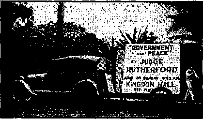

Contents
Religious Governments versus The Theocracy
The Religious Country of Spain
Franco as Bad as Mussolini or Hitler
The Jfew Government
Jehovah’s witnesses—Who and What
Counsel by J.- F. Rutherford
Bist Business
Under the Totalitarian Flag
P&oelli and Hitler—An Exposure
British Comment
Clouds Gathering Round Britain
Published every other Wednesday by WATCHTOWER BIBLE AND TRACT SOCIETY, INC, 117 Adams St., Brooklyn, N. T., U. S. A.
Editor Clayton J, Woodworth
Business Manager Nathan H. Knorr
Five Genta a Copy
il a year In the United States
31.35 to Canada and all other conn trie#
NOTICE TO SUBSCRIBERS
Remittances: For your own safety, remit t>y postal or eXpt#M money order. When coin or currency la lost 111 the Ordinary mails, there Is no redress. Remittances from countries other than those named below may ba made to the Brooklyn office, but only by International postal money order.
Receipt of a new or renewal enbecrlption will be acknowledged only when requested. Notice of Expiration nr sent with the journal one month before subscription expires, please renew promptly to avoid loss of copies. Send ohangaof address direct to us rather than to the post office. Tour request should reach us at feast two weeka before the date of issue with which it is to take effect. Betid your otd as well as the new address. Copies win not be forwarded by the post office to your new address unless extra postage Is provided by you.
Published also In Afrikaans, Bohemian, Danish, Dutch. Finnish, French, German. Greek, Hungarian, Japanese, Norwegian, Polish, Portuguese, Spanish, Swedish, Ukrainian; also special Australian edition in English.
OFFICES FOR OTHER COUNTRIES ,
England 34 Craven Terrace, London, W. 3
Canada 40 Irwin Avenue, Toronto S, Ontario Australia 7 Beresford Road, Strathfield. N.S.W. South Africa 633 Boston House, Cape Town .
• Entered as second-class matter at Brooklyn, N.
’ under the Act of March 3, 1879.
Appetizers
Up Boston Way .
“How old are you!” inquired the visitor of his host’s little son.
“That’s a difficult question,”,answered, the young man, removing his spectacles and wiping them carefully. “The latest personal survey available shows my psychological age to be 12, jny moral age 4, my anatomical age 7, and my physiological age 6. I suppose, however, that you refer to my Chronological age, which is 8. That is so old-fashioned that I seldom think of it any more.”—Labor.
The Politest Boy
Fussy Man—“Here, boy, where does Mr. Smythe live ?”
Polite Boy—"I’ll show you, sir,” and he started to climb the stairs. Up six flights he went with the visitor following breathlessly. Finally he paused at an open door and said, “This is where Mr. Smythe lives.”
Fussy Man—“He doesn’t seem to be home,” peering into the room. -
Polite Boy—"No; he was standing at the entrance as we came in,”—Tit-Bits.
Al! Modern Convenience#
A little girl brushing her hair found that it crackled, and asked her niother why it did, “Why, (jear, you have electricity in your hair,” explained the mother. .
“Isn’t that funny?” commented the little one. "I have electricity in my hair and grandmother has gas in her stomach.”—Australian Consolation.
Expecting Too Much
MotherWillie, a while ago there were two pies here on the shelf; how there is one. How is that?
Willie: Well, I just couldn’t eat another one.—Kellygram.. '
Should Be More Independent
A little boy who had to rock the cradle for his baby sister.: “Mamma, if the Lord has any more babies to give away, don’t you take them.”
In a Michigan Sunday School
Teacher: What does it mean to deliver a man?
Pupil: To deliver a man means to remove his liver. ,
“And in His name shall the nations hope.”—Matthew 12:21, A.R.V.
Volume XXI Brooklyn, N. Y„ Wednesday, August 21, 1840 Number <M»
Religious Governments versus The Theocracy
THE views herein set forth can hardly he any more popular than they were in the days of Christ Jesus. He was not interested in the politics of the Roman Empire. He taught that hate is murder and that the clergy are hypocrites. His followers were of the meek and lowly. They were not trying to rise in the community. They were not cowards. They were not liars. They were not afraid to tell the truth and take the consequences behind bars or on the tree.
The memoirs of Gabriel Hanotaux explain that the United States was put into the World War by the banking house of J. P. Morgan. It was done officially by the American ambassador to France, Myron T. Herrick, and two official representatives of the house of Morgan, namely, Robert Bacon and William G. Sharp. The deal was made just after President Wilson had been re-elected because he had kept America out of the war. The guaranteed reversal of American opinion was done by 25 papers under Morgan control. They knew in advance what they had the power to do, and did it by that means.
The house of Morgan believes in paying taxes only when it must. So said Mr. Morgan, head of the house, in explanation of why he paid no income taxes in 1930 and 1931. Mr. Morgan’s father was a very religious man; one of the main spokes in the wheel of the Anglican Church in the United States.
Putting the United States into the World War was not entirely altruistic. It was correctly calculated that there would be huge financial returns, and there were. In the four years before the war the average annual profit of the United States Steel Company was $105,000,000, but during the four years of the war their profits were of the annual average
AUGUST 21, 1940
of $240,000,000. In the case of Bethlehem Steel the respective figures were $7,000,000 and $49,000,000. In the case of the Du Pont Company, $6,000,000 and $58,000,000.
Du Pont Patriotism
When he visited this country a few years ago it was said that Eugene Pacelli, now Pius XII, invested huge sums of the church in the Du Pont enterprises. Probably he knew war was coming. One of President Roosevelt’s sons married one of the Du Pont girls.
The big financiers believe in getting theirs in this life, especially if they are interested in the munition business. The papers which they own publish what they are supposed to publish, the banks do what they are told, the governments are silent or reverse their policies and the politicians are their clerks.
One of America’s frugal millionaires had $245,000,000 quite some years bdek. If Adam had worked at $115 a day and worked seven days in the week and were still alive, and saved every cent he made, he would have even less than this man. This rich man wants not less money, however, but more, very much more, and knows how to get it, too. This man is a very religious man, extremely so.
At present America is in the midst of a widely advertised drive for more religion in government, in business and in everything else. The president of the United States, ana the big financiers, are back of it. The religion may be of any kind, Catholic, Protestant or Jewish, only so that it is religion. The more, the better.
The head of the New York Stock Exchange, Richard Whitney, was one of the most religious men in New York. He was the official lecturer of the Stock Exchange on the sub-
3
ject of honesty. When he stole $2,000,000, and went to prison for it. he caused the death of innocent men who lost their lives because of his crookedness. Whitney was closely connected with the house of Morgan. One of the governors of the Stock Exchange wanted an investigation made of that establishment, but the rest of the governors lacked the nerve to go ahead with such an investigation; so Robert M. Hutchins, president of the University of Chicago, resigned from the Board.
Brotherliness Among Munition Makers
There is real broth oiliness among munition makers. Regardless of the flag that flies above them, they work hand in hand. During, the World War they did a tremendous business with one another, much of it via Switzerland. They protected one another’s plants. When peace was in sight they were in conference as to how the war could be prolonged.
Europe’s methods are crude. Here the same crowd arc in control of the banks and have the details worked out so that they can issue legal tender for $1,000 at a cost of only 27c. Originally the Federal Reserve was to pay some interest for their use of the Government’s credit; they were to fix the amount ; they fixed it at zero. Originally the racket was to be for twenty years; they solemnly made it to be perpetual. The natural result of this control of credit is that less than 600 firms own more than half of the corporate wealth of the U.S.A.
But back to Europe. When the time came to rearm Germany, so-called “mail” planes were sold to Germany exactly like the fighting planes sold to the United States Navy. Germany was also sold, “for industrial purposes,” powder, bullets and machine guns. Hitler was shoved into power by the big industrialists and the big church or religion crowd, Thyssen, Krupp and von Papen. Sir Henry Deterding, famous British capitalist, put up a loan of $200,000,000 to help the good cause along,
Germany was not slighted in any way. The Electric Boat Company plans and specifications were used indiscriminately for making submarines for Britain, Canada, Ireland, India, United States, Cuba, Japan, Netherlands, Australia, Spain, Germany, and Italy. The French-owned Skoda, Czechoslovakia’s great armament firm, donated millions of marks to the campaign fund which put Hitler in power. The American firm of Pratt and 'Whitney supplied Hitler with the airplane engines wherewith he has wrecked Europe.
The surrender of Czechoslovakia was fixed up four years in advance in the private office of the head of the Bank of England. In that year (1934) English armament firms placed huge advertisements in German papers offering for sale tanks and guns prohibited by the Versailles treaty. Chamberlain and his son were then and probably are now heavy shareholders in munition industries.
What the German people are up against as regards the munitions crowd may be gathered from the fact that the big fellows now have works’ prisons, where employees can be jailed and beat up without the formalities of outside trials. As a further exhibit in this connection, please consider the following extract from the Annual Report of Krupps for the year just prior to the resumption of the World War: ' The committee desires to report that it has taken full cognizance of reports that a conference to bring to pass a reduction of armaments is to be held, and that it has definitely established that these reports are baseless. The industry may, therefore, he assured that the coming year (of 1939) will be a period of undisturbed activity and steadily increasing prosperity.
The Religious Nation of Japan
Japan is one of the most religious nations in the world. It claims to have 8,000,000 deities, and is always wnlling to add more, provided the new religions will recognize Shinto (i.e., that the Japanese emperor is descended from the gods) as the all-essential basic proposition. All missionaries to Korea must now bow before Shinto or get out. Some of the missionaries did so, in order to keep themselves in pay checks, but it was too much for the Presbyterians and they had the gumption to see that it is inert* heathenism; so they packed up and left.
The Japan Times, Tokyo, quotes with approval the following statement respecting its undeclared war in China:
The voice of justice has eoine from the Vatican. Never before has such whole-hearted support of Japan’s present action in China been given outside the nation. Kurth erm ore, the significance of the Holy See’s instructions lies in the fact that there are almost four hundred million Roman Catholics to whom the Vatican’s word is law. Thus it may be said that one-fourth'of the population of the world is supporting Japan in the China incident. The Catholic Church has supported us, has urged us to fight for the prevention of Communist penetration in Asia. War is deplorable and con damn able, but it sometimes becomes necessary io fight and kill for the sake of real peace and happiness.
In support of the foregoing it may be added that the Roman Catholic Church (Japanese branch) published pamphlets in five languages and distributed them throughout the world confirming the above information.
How the War Started
The Sino-Japanese war started because the Japanese missed one soldier and would not wait until morning to search for him. They thereupon served notice upon the Chinese government not to take any measures to protect itself. Since then, by bombs and by narcotics, the destruction of the Chinese has been under way.
In the first year of the war the Japanese lost 100,000 soldiers and the Chinese 450,000 soldiers. Hundreds of Chinese cities have been bombed, wiping out thousands or possibly millions of men, women and children. In one case a beggars7 camp was bombed, killing 50 lame, blind and helpless creatures.
The atrocities practiced at the overthrow of Nanking, as published in the Manchester Guardian, and republished in Consolation, July 13, 1938, page 21, are without parallel in warfare. On twelye successive nights Japanese soldiers raped the women of the city, one of whom was only 7 years old, and it was three weeks before order was restored. It could hardly be wished that these soldiers needed more religion, more Shintoism, What Nanking needed then it needs now, namely, Christianity, The Theocracy.
The Religious Nation of Italy
On account of the fact that it is the home of the Vatican Italy is in some respects the banner religious country of the world. Its ruler, Mussolini, converses for hours at a time with demons similar to those that Christ permitted to enter the swine. His brags of what he will do when his fleets of airplanes take to the skies causes the blood of his listeners to run cold. His course in the training of children begins at the age of 6 years. The Wolf Cubs are taught to ivear gas masks, handle diminutive rifles, march and sleep in tents, and their training continues until they are 55, growing ever more strenuous.
Mussolini is a hit-and-run driver, with an automobile, and proud of it. He sanctions beating a prisoner on the feet with ail iron bar, and crushing his testicles with wooden clamps. He has said of democracy that it is Worse than a failure and that Fascism— .
AUGUST 81, 1940
has always passed, and if necessary will again pass, without the slightest hesitation over the more or less decomposed body of the Goddess of Liberty.
To make peace with the Vatican and reestablish himself in the good graces of Religion he turned over $80,000,000 to it; defends the Inquisition as it is defended in the Catholic school history, Modern World, section 325, pages 345-346; agrees that it is right to murder “heretics”, as always taught by the Hierarchy ; and would be compelled to endorse the excommunication of Victor Emmanuels II, reading in part as follows:
. . . may he be cursed inwardly and outwardly; may he be cursed in his hair; may he be cursed in his brain; may he be cursed in his crown of his head, and in his temples, in his forehead and his ears, in his eyebrows and his cheeks, in his jawbones and in his nostrils, in his foreteeth and in his grinders, in his lips and in his throat, in his shoulders and in his wrists, in his arms, his hands and in his fingers. May he be damned in his mouth, in his breast, in his heart and in all the viscera of his body; may he be damned in his veins, and in his groins, in his thighs, in his hips and in his knees, in his legs, feet and toenails. May he be cursed in all his joints and articulations of his body. From the top of his head to the soles of his feet, may there be no soundness in him.
Mussolini is now and henceforth an extremely religious man. He is back in the fold.
The Religious Government of Ethiopia
Ethiopia was one of the oldest religious governments in the world, and one of the worst. Its ruler, Haile Selassie, claimed to be the “Lion of the Tribe of Judah”, a title belonging only to Christ Jesus, Jehovah God’s appointment as Ruler of The Theocracy.
Selassie obtained his throne by a revolution, imprisoning the former emperor in the crater of an extinct volcano. He recalled his ambassador to France and had him chained naked in a hut, wallowing in his own excrement until he went insane. When the man’s brother protested, he had him tied between two planks and sawn apart. He collected taxes by the machine-gun method. When the tax collectors called on a community they either got all the taxes assessed or they machine-gunned the entire community, men, women and children. Selassie had religion, but no Christianity.
In due time Mussolini decided to take over Ethiopia. On the day' of mobilization every church bell in Italy pealed joyously. Not less than 103 of the highest dignitaries urged on the war, and invoked the blessing of God on
the Italian troops. Among the blessers of troops, nurses, etc., were the then pope, Pius XI, the present pope, Pius XII, Cardinal Schuster of Milan and Bishop Margaria. The latter gave up his. gold beads and gold cross to help the good work along. The queen of Italy gave up her gold ring and a military archbishop (whatever that is) blessed two iron rings given her in their place. The troops from Faenza carried along with them a miraculous image of the virgin, blessed by the archbishop, and Pius XI crowned it all by personally blessing Mussolini himself.
In the subjugation of Ethiopia neither man nor woman was spared. The tanks that were to crush their huts and destroy them and their families were “blessed” when they started out on their errand of devastation. Mussolini’s son showed that he is a true child of his father. He wrote a book explaining the peculiar joy he got in bombing a group of horsemen. He said on this subject:
I remember that one group of horsemen gave me the impression of a budding rose as the bombs fell in their midst. It was exceptionally good fun, and they were easy to hit, as we were not too high op. They offered a perfect target.
The rudiments of a conscience were stirred in some of mankind by Italian atrocities in Ethiopia, and the archbishop of Westminster offered the defense that the pope had no moral stamina: he was just a defenseless old man, entirely at the mercy of his neighbors. He could not do anything and, of course, could not say anything. This did not go over very well, for the reason that everybody knew that the pope was back of the war, had blessed it from the start and wanted Mussolini to win.
The Religious Country of Spain
Spain has always been, and still is very religious. Religion means compliance with traditions and commands of creatures regardless of the commands of the Creator, and the condition of the poor populace of Spain for centuries was lower than that of the lower animals. The Jesuits owned one-third of the land of the country and paid no taxes on it. The 4,000 convents and monasteries devoured the best of everything. The religious business sent $20,000,000 out of the country every year and yet fifty percent of the children had no schooling.
The 4,000,000 farm workers were always on the edge of starvation. To snare a rabbit or squirrel, or even a erow, was to be shot down without mercy. The great estates were kept merely as hunting grounds. Ten pesetas ($1.95) were necessary to live, but the peasant often received but 2 (39c). Some families were never able to buy meat. Some men never had a new suit of clothes after their wedding suit.
The salary of the bishop of Toledo was and is $600,000 a year, or eight times that of the president of the United States. In Caceres in 1931 there were 38 monasteries in a row and when there was a religious procession the statue of the virgin was literally buried under jewels, diamonds, rubies, smaragds and other precious stones, with other evidences of vast wealth too lengthy to list. John McGovern, Glasgow Catholic, said:
The Church owned more than transport and land. It controlled the greatest amount of stock in telephones, banks, lumber, contracting, engineering, film production, cinemas, theaters, cafes, hotels, sports grounds, and even dog racing and the bull ring. Every time the dog chased the hare it made a profit for the Church. Every time the bull was stabbed to death or a toreador shed his blood, the Jesuits drew a profit.
The Spanish Republic
In an open and honest vote the Spanish people decided to establish a republic, and its constitution, patterned after that of the United States Government, was a document of which the people might justly feel proud. It gave equal rights to all religions and ordered the priests to confine their activities to teaching religion. This did not suit those who had been running the country, and a revolt was carefully planned. ■
Major Pollard, British Catholic, illegally flew a plane to General Franco, then in exile in the Canary islands. Franco flew to Morocco, there to get in touch with 6 Italian planes dispatched from Italy three days previously, every one of them with 10 machine guns aboard. When the revolt was only three days old German planes were transporting heathen Moors to Spain to overthrow the Republic.
The Moors were nominally financed by Juan March. On a single occasion an expenditure of $1,500,000,000 was authorized. Immediately after he made this promise Juan March went to Italy. What for? Where did he get the money? There is only one place in Italy where it could be obtained. Mussolini is poor as a church mouse.
The Moors were equipped with guns to which were affixed the badge of the Sacred Heart, and the Moors wore bags on which were
CONSOLATION
inscribed pictures of the same. Girl militiamen of the Spanish Republic were turned over to the Moors, one to 20 Moors. At Toledo, where 600 Government wounded were in a hospital, Moors came in with hand grenades and killed them in their beds.
At Badajoz a large crowd of laborers and poor folks took refuge in the cathedral, thinking that, because they were Catholics, they would be granted right of asylum. They were taken from the cathedral square to the bull ring and there these 1,500 defenseless men and women were machine-gunned until all that was left was a bloody heap of rags.
At Teruel there was a similar scene, and concerning this Lawrence A. Fernsworth, newspaper correspondent, himself a Catholic, said:
The plaza was decorated, crowds applauded each execution, and afterwards the band played and there was dancing.
Speaking further of Teruel, Mr. Farnsworth said:
When the Loyalists captured Teruel, population 12,000, they not only learned of the murder of a fourth of its inhabitants but released from a single prison cell thirty-seven women and eight babies who had been kept in that cell for an entire year. [Condensed from New York Tmssj
Guernica, Malaga and Majorca
In what was merely the re-establishment in power of the old gang that had previously ruined Spain, but which was played up as an attack on Bolshevism, the work o‘f bombing Guernica was turned over to Hitler, the present partner of Stalin. The job was expertly done. To get the people into the streets heavy bombs and grenades were dropped all over town; when they filled the streets in terror they were machine-gunned; when they rushed back into the cellars, heavy bombs, capable of making holes 25 feet deep, were rained upon the buildings, which collapsed upon the victims. By these means 800 unarmed men, women and children were slain. Incendiary bombs finished the job of destroying the city.
Guernica is in the Basque country, which is solidly Catholic. When a committee of 19 clergymen wrote a personal letter to the pope, and delivered it personally, narrating the above incidents, and the shooting of 13 priests, imprisoning of 117 and exiling of 135, the then pope Pius XI replied that protests emanating from the Spanish Republic would not receive a warm reception in Vatican quarters.
Probably one of the worst outrages in Cath-
AUGUST 21, 1940 olic Basqueland was at the hospital at San Sebastian, where hand grenades were thrown into the maternity ward, mixing in one bloody mass mothers, infants, and nursing sisters.
The bombing of Malaga was turned over to Hitler’s brother Catholic, Mussolini. The people that were bombed were Catholics. The children streamed out of the city on the flint road to Almeria, 100 miles away. Many of them wqre barefooted and had on but a single garment. Their feet were swollen to twice their natural size. Once a day, on the five-day journey, they lined up for a cup of preserved milk and a handful of dry bread. The Italian planes followed these little marchers, killing hundreds of them, and the Italian cruisers bombarded them from the sea.
No war was ever declared against the Spanish Republic by either Germany or Italy. When Malaga was captured 5,000 people were put'on trial for their lives. The average length of each trial was two minutes: one in ten was shot: one in ten was imprisoned for life. Mussolini’s aim was to prevent the spreading in Spain of the ideas of Hitler’s friend Stalin; so he said. Those sentenced to death at Malaga were shot in the back. Italian planes bombed Barcelona 2,000 times.
The Italians were also entrusted with suppression of “Bolshevism” in the agricultural island of Majorca. Here 3,000 suspects were dragged out of their houses at night and massacred ; not a sick or wounded person was spared; sometimes these massacres were in the presence of a priest; appearances were carefully preserved; no one was allowed to wear mourning; no shops were closed. One lad of 12 was killed for his Republican opinions. The bishop of Palma, Majorca, declared one day, in giving his “blessing” on the work in hand, that it was not sufficient to exterminate the Republicans, but that their offspring also should be annihilated.
Franco as Bad as Mussolini or Hitler
Franco is even more religious than either Mussolini or Hitler, if that could be possible. At any rate, he is of the same faith. The Madrid College of Lawyers issued a statement regarding the conduct of his troops from which is taken the following item:
Many pregnant women were forced to drink a mixture of castor oil and petrol. One of these in Algeciras, whose husband they discovered had fled to Gibraltar, was made to drink a large quantity of the stuK and then allowed to join her husband. She died the next day.
After the war was over, or should have been over, the Spanish Inquisition was re-established, with all modern improvements. A card index of 2,000,000 persons suspected of sympathy with the Spanish Republic was formed and the elimination of all liberty-lovers was undertaken and is still in process. Nothing was or is forgiven. Meantime, 1,000,000 children starve for want of their natural caretakers. Of this feature, of the elimination of'the Republicans, the Paris correspondent of the New York World-Telegram said:
Even the French friends of Generalissimo Franco of Spain swallowed hard when they read today of His Holiness blessing several hundred Spanish Fascists, members of troop units who were known among international newspapermen in Spain as “murder brigades”, and his telling them that they had done “the Lord’s work”.
For newspaper purposes Franco had also the alibi that he, was fighting against the cause of Hitler’s friend Stalin, i.e., <fBolshevism.” A newspaperman asked him what he meant by that term ; and the intelligence of the man may be measured by the reply that it meant “strikes, demands for higher wages and all that sort of thing”. Ills “Minister of Education” closed fifty high schools, giving as a reason that—
The people are better off without education. It unfits them for their destiny as peasants and workers. .
The late Cardinal Hayes, of New York city7, stated that he was praying regularly7 for the success of General Franco, and both Pope Pius XI and Pius XII “blessed” him for his work in finishing off the Spanish Republic, in violation of his solemn oath of loyalty, and under the false banner of anti-Bolshevism. Mussolini, Hitler and Franco are three liars.
Mussolini, the sleeping-car hero of Fascism, has been gallant toward other governments than those of Ethiopia and Spain. For example, there is little Albania., just across the strait from the Heel of Italy7, in the Balkans. On March 23, 1939, King Victor Emmanuel of Italy7 declared that the relations of the Italian government with the kingdom of Albania were happily most cordial.
Sixteen days later the Osservatore, Romano, official organ of the Vatican, stated that it was not the intention of the Italian government to make an attack on the independence and integrity of Albania. Before this paper could get its papers off the press 400 bombers and 100 warships overwhelmed little Albania’s 2 planes
and 4 motorboats. A fleet of tanks sprayed the streets crowded with civilians with machine-gun fire. ■
The queen of Albania had become a mother only7 two days before this unprovoked and unannounced attack. She was compelled to .flee to Greece in a condition that threatened to make her a helpless invalid for the rest of her life. Zag, the Mohammedan king of Albania, was supposed to be quite liberal for a Mohammedan.
Greece, to which the Zogs fled, is very religious. The prevailing religion is Greek Catholic. The Greek patriarch decides what may be taught along religious lines. When the Greek Republic was overthrown and the dictator Metaxas took control his first work was to throw 13,000 Greek democrats into concentration camps. Religion prospers and thrives naturally under a dictatorship, a condition where some religious person decides what the people may consider.
Prisoners of Metaxas, on the Aegean islands of death must exist on 13e per day. Two dozen pool their resources, sleep in one room, sift their own wheat, bake their own bread and provide as best they can fuel, water, shelter and other necessities. There is a price of $750 on the head of exiles who escaped from these islands and their children are held as hostages. Some of these prisoners were beaten with clubs on the soles of their feet until they could not even stand. Does Greece need more religion, or more Christianity7, which?
The Religion of Russia
Up to the time of the World War Russia was the most religious country in the world. Ikons (idols), “blessed” by the Orthodox Greek priests, were carried into battle as a part of the equipment of every Russian regiment. The religionists overworked their racket. They exhibited cotton and plaster of Paris “saints” as “proof” that their holy men did not decay after they died. The news got out and the old religion went overboard.
In jig time the old religion was replaced by a new one. Instead of ikons to worship, the Russians soon had first Lenin and now Stalin, and stark terror reigiis from the Baltic sea to Behring strait, and from the Black sea to Nova Zembla, By the Soviet system everybody is encouraged to spy on everybody else, including children on their parents and- on one another.
(To be continued)
♦ It comes as a surprise to learn that the world’s largest airport is in the woods of Newfoundland. There are four paved runways, each nearly or quite 4,800 feet long, none of them less than 600 feet wide, and one of them twice that width. The approaches to the runways have been cleared of trees for about aV mile. It is calculated that this airport will be one of earth’s busiest places during the immediate future, and that great numbers of bombing planes will find their way to England by this route. ’
♦ A determined woman, who wanted to ride on the first regular passenger trip of a clipper across the Atlantic, booked her passage in 1931, and eight years later was landed safely in Europe within 22 hours from the time she left New York. The trip, which costs $375, is made in the big 414-ton flying-boats, without incident and without excitement; service each way once a week.
♦ In an airplane over Washington, D.C., too high to see the ground, a National Broadcasting Company photographer obtained a good picture of David Sarnoff and W. A. Patterson seated at their studio table in New York city, 200 miles away. The photograph was sent by television. Subsequently, by the same apparatus, the voyagers in the plane saw their plane land at the North Beach airport, New York.
♦ New York boasts of a new airport claimed to be the largest and best, even larger and better than Newark’s. It occupies not quite a square mile. Its hangars for land planes are each as large as Madison Square Garden. Its cost is over $50,000,000. Like the Newark airport, it can be reached by automobile from the center of the city in twenty minutes.
♦ Every plane of the American Air Lines, no matter in what part of the sky between Boston and Los Angeles it may be flying, is in constant touch with some one or more of the thirty stations of the company along the line.
AUGUST 21, 1940
♦ Experiments with the oxygen-gas mask show that at 20,000 feet the use of the oxygen and helium mixture ends dizziness. When masks are removed at 19,000 feet elevation the human heart beats go up to 120 in 45 seconds^ as compared with a normal of 80 beats. When the mask is replaced the heart drops back to 102 beats within 30 seconds, and then slowly settles back to normal. The new gas mixtures will be available in planes flying at the higher elevations, and passengers ean make use of them or not, as they desire. The passenger has only to plug in to get his share of the gas.
♦ The autogiro service between Philadelphia and Camden post offices is a complete success. Trips are made in 6 minutes, to compare with 40 minutes for mail trucks. The roof of the Philadelphia post office, 365 by 278 feet, was specially designed for the service, which, it is predicted, will come into wide and immediate use for transport of mail, express and passengers from large civic centers to the airports in their suburbs.
♦ On account of shortage of planes and trained pilots the Imperial Airw'ays was obliged to refuse passenger bookings on its 22,000 miles of lines from England to South Africa, Egypt, India, Greece, and the Far East. Several planes were lost recently, and both planes and pilots are needed for the government rearmament program.
♦ April 1, 1939, the first passengers were carried on the trans-Canadian air line, which makes the journey between Montreal and Vancouver in 171 hours. The rates for passengers are the same as in the United States, 6 cents per mile. Meals are served free.
♦ Traveling solely by commercial planes Mrs. Clara Adams, of Cincinnati, went around the world in sixteen days, via London, Karachi, Hong Kong, Manila and San Francisco. She left New York June 28, and was back again on July 14.
♦ Fire-dancing, under the, supervision of demons, is practiced in the Greek Catholic community of Baurgas, Bulgaria. The account, .given publicity by a Reynolds News Agency correspondent, and published in Australian Consolation, follows:
At a given signal from the head of the firedancers, who by this time all appeared to have fallen in a trance, the music stopped playing and the dancers leaped with bare feet onto the burning cinders. They danced for several minutes. Although their faces became pale they showed no signs of pain and their feet were neither scorched nor burned. After emerging from the red-hot embers and regaining consciousness, one declared before the surprised audience, “Only those who have strong faith in God [the god of this world—the Devil—Ed.] can dance on the fire without receiving injuries.”
♦ Shepherd Lupu, of Rumania, who claims he saw God three times in 1935, and who is therefore demonized (for, “No man hath seen God at any time/’ and, ‘No man can see me, and live’), prophesied on August 21 that there would be no European war. His prophecy was widely published, and in ten days thereafter Europe was at war. That is once when the demons got caught at it.
.♦ The police of Budapest, Hungary, came to the accurate conclusion that all fortune tellers are crooks and arrested the whole lot, some 3,000 of them, confining them in concentration camps. The entire business is founded on demonism, called in the Scriptures ‘lying spirits”, and well named.
♦ The “Reverend Father” Tiso, president of the rump state of Slovakia, is getting along fine with Hitler and his friends, and reports that all is well with his country since Czechoslovakia was betrayed into Hitler’s hands. Inasmuch as he betrayed it, he ought to know.
Oppression of Jews in Hungary , ♦ The eity of Budapest, Hungary, ordered all Jewish peddlers and junk dealers operating in the market for secondhand goods to go out of business.
♦ Nazi laws put into effect in Bohemia and Moravia doom the Jews of that country to the loss of all property. A Jew is defined as anybody with three Jewish grandparents or with two Jewish grandparents and having the Jewish faith. They were required to list all the property which is to be stolen by the state, are forbidden to acquire or lease real estate, to acquire an interest in business undertakings, or to purchase stocks and bonds.
♦ In the year 1920 one of the largest metallurgical establishments in Czechoslovakia had a Jewish director for fifteen days. On this evidence the factory was seized by the Germans, twenty years later on the ground that it is a Jewish concern. Even supposing that it is Jewish, which it is not, what right would anybody have to take it? The Jews have a right to work, have they not?
♦ The person who betrayed Slovakia into the hands of Hitler is a Catholic priest named Tiso, who is now the president of his country. At a recent reception of diplomats in his capital Monsignor Tiso referred to the Soviet as “our good friend the Soviet Union” and referred to the “affinity of our two nations” as making “co-operation in all spheres” desirable. This lets another cat out of the bag.
♦ In Yugoslavia the authorities wished to re-examine the papers of a German resident, and called at his home for the purpose, but found him absent. In his absence they searched the premises and found 30 machine guns and an equal number of German uniforms. They could hardly be blamed for being nervous with such guests; now, could they?
♦ Some idea of the horrible conditions prevailing in Central Europe may be drawn from the fact that 150 Jews at Constanza tried to commit mass suicide by jumping into the sea when they were denied permission to board a vessel for an unknown destination. Twenty-six got past the police and did jump, but were rescued.
♦ A pre-war note from the Netherlands explains that in the spring the farmers sell their potatoes at auction. If there is no market they hold them until the government can find a market in South America or elsewhere. If unsold they are sprayed with kerosene, but the farmers receive a bonus. Tulip bulbs often go to the government to be ground into cattle feed. Cabbage goes the same way. When the price for cabbage has descended to one gulden (42c) for 200 pounds the government purchases the remaining offerings for cow feed, giving each cabbage a deep cut over the head so that it may no longer be used for human food.
The unemployed flock into the army, though many of them go to Germany to work. German automobiles run more than 60 miles per hour and do it on 40 miles to a gallon of gasoline. .In races in the Netherlands German automobiles, motorcycles and airplanes win every race; so says the informant.
♦ In Denmark the land belongs to the state (at least much of it does) and remains with the state, but a man who has had agricultural training and has a little.money (ten percent of his requirements) to invest in the farming business will be given cattle, pigs, poultry, modern implements, telephones and electric lights and all necessary buildings, and the state will let him pay for it over three generations. And he may pay a variable rate of interest, depending upon whether prices go up or down. And he may sell to another man everything except the land. It seems like a sensible arrangement that the less civilized lands, such as Britain and America, might well consider. Four-fifths of the 16,575 square miles (twice the size of Massachusetts) is closely cultivated.
♦ Sweden has an institution every country should have. It has a board of public opinion to which, any person may appeal who feels that he has not been fairly treated in any part of the public press. His claims are investigated by the board, which consists of publishers and writers, and their findings are widely published. It tends to a fair deal all round.
AUGUST 21, 1240
♦ To an inveterate tobacco-user, his own desire to gratify his tobacco appetite is the most important thing in the whole world: it is certainly more important than the desires or interests of his fellow men, for these are never consulted any more. Even the women smokers disdain asking to be excused for their tobacco stink, when they “light up”. In southern Norway a British anti-aircraft barrage balloon came down, having been torn loose from its moorings by a storm. As soon as it landed, several Norse citizens went to see it. One of them, of course, had to pull out his pipe and light it as soon as he got near enough to see what it was all about. The balloon was inflated with hydrogen gas. When it struck the earth it sprang a small leak. When the man lit his pipe the balloon exploded, killing him and injuring three other persons.
♦ Lithuania seems to have nice neighbors. Russia agreed to let Lithuania keep her “liberties” provided she would hereafter let Russian troops “protect” the country; and, as Lithuania could not help herself, she agreed, and, according to Russian propaganda, hailed her deliverers. But one may guess the nature of the “deliverance” when told that as the Russian troops moved in the Lithuanians were forced to clear the streets of all activity and the houses and stores along the route had to be boarded up. The “liberty” is the same as that of the Japanese common people who are not even permitted to look at their soldiers when marching away to murder the Chinese. More and more it becomes obvious that only the Theocratic government of righteousness can insure peace to the nations, or what is left of them after Armageddon.
♦ Dairy farmers in Finland receive 76.3 ‘percent of every dollar spent by consumers for milk. The co-operative dairies in Finland are really co-operative, instead of being, as in the United States, mere departments of the Milk Trust. In America the farmers in many eases receive only about 25 percent of the consumers’ dollar, and the average for the entire country is only 38 percent. .
11
♦ On March 10, 1940, eight of the publishers at Tripoli, Syria, went to a Catholic town named Gebal, where they scattered two by two going from house to house, leaving the Kingdom message which gave the meek ones of the “other sheep” hope and gladness that was manifested on their very faces.
Finally, at the end of the day, two of the publishers entered the home of the priest and gave him and those with him the witness and spent much time explaining the message from the Bible. He gave them arrogant attention. Finally he said, “If I believed everything you have said as being the truth and still remained a priest, would it be wrong for me ?” One of the witnesses put his hand on the priest’s black robe and said, “Unless you shed that black symbol of death, you will not receive life from Christ Jesus.” After explaining to him what the priestly robe stood for and the false Satanic teachings he was giving the people, he took the booklet Uncovered and promised to read it carefully and urged upon us to call on him again. We finished that town, placing about 24 books and booklets, and went on our way rejoicing.
The following Sunday, March 17, which was “Palm” Sunday for the Catholics, we went to another town near Gebal, named Fadouss. The eight of us scattered all over the place, going from house to house, where we found only the children. Upon inquiring for their parents, they told us their parents were at the church of St. Sasseen. We were disappointed and wished we had not come to this desolated town. But upon second thought we decided to stay and wait for the Baal-worshipers to eome home, which we did. About 1 p.m. we went back-calling on them from house to house. At some of the homes we were met by some who said, “It is peculiar how such nice, clean and orderly young men like you are chosen to go out and do this kind of work.” We placed 43 books and booklets and went back to our sound machine rejoicing and grateful to Jehovah for such unexpected results.
While we were waiting for two of our companions to come to the sound-car so we could leave, two mounted police approached us saying, “Hey, young men, wait; what kind of books have you got there ? What are you doing with those books?” By this time there was a large crowd gathered around us. One of the witnesses boldly answered: “Our purpose is preaching the gospel of God’s Kingdom, which is clearly set forth in these books.” The police took out their handcuffs, and said they were going to take us to the barracks. We told them we are eight, and said, "We are ready to go with you anywhere you want, because we are not ashamed of this message and we do not fear to tell it to anyone or proclaim it from the housetops by word of mouth and sound equipment. We deem it a great honor to have the privilege of witnessing the Truth concerning the King and the Kingdom before judges and rulers of this world, in complete obedience to our great Master’s command and which He foretold long ago.” After we gave a witness to-the police and the crowd gathered around us, the other two witnesses finished all the scattered houses on the outskirts of the town of Fadouss and came back to find us surrounded by the police and the crowFd. They joined us.
Before putting us in the sound-car to take us to the barracks the police lined us up to search us for weapons, but they found nothing except the two-edged sword of Jehovah. One of the policemen came to search the witness who was speaking to them. The policemen and the crowd were astonished at the manifestation of such strange faith and boldness from these yOung men. Again one of the policemen said, “I have no doubt in my mind that such nice young men as you who show all the characteristics of gentleness and kindness would not do anything to harm the general welfare of the community. But it is our duty to make su^e the movements of everyone because we are in a time of war.” T-he witness answered, “We gladly accept this searching because we are looking for the people of good will in this community, to convey to them this gospel of the Kingdom. By doing this you have made it easier for us and saved us the time of going to your homes.”
Finally they put us in the truck and took us to the police barracks at another town, named El-Betroun. There they set the eight of us on' the bench before the assistant of the mayor, who is a strict Moronite Catholic. He started
Testigos de Jeliova “Aminciando la Teocraeia”, Havana, Cuba
to ask us questions. After he found out about our mission he called the mayor at his home where he was celebrating Palm Sunday. The assistant told the mayor over the telephone: “This is a very simple case, because these books and booklets tell about the gospel and there is no objection against them.’1 "When we heard and saw this man to be of good will and very favorable, we started to explain to him further the difference between religion and Christianity. Also we showed him the grave responsibility upon those who hear the Truth and oppose it, and that those who hear the Truth and uphold it and proclaim it to others will receive the blessings of life. lie gladly accepted a book Reconciliation and a booklet Armageddon, and sent us home rejoicing.
After we left him we spoke together and reminded ourselves how the day began in Fadouss and ended at El-Betroun, victoriously for Jehovah and TIis truth. We know positively that all this trouble started from the wicked Hierarchy. Then we remembered the text at Romans 8:28, “All things work together for good to them that love Cod, to them who are the called according to his purpose.” —M. IT. Abend, Syria,
AUGUST 21, 1S40
“Anunciando la Teocraeia”
♦ It is with real joy that we write to tell you of the onward march of The Theocracy in the land of Cuba. In times of past, when we would tell the people that we had a message of ‘God’s Kingdom’, they would confuse us with the religionists, who often use these words, in hypocrisy, to be sure. Since Jehovah’s organization began to function as a Theocracy the people here have been advised of this, and the result is that the word “Teo-CRACIa” is becoming a household word. The publishers make an effort, to mention the words “Tf:ochacia” (Theocracy), “Atalaya'1 (Watchtower') and Consolation (Consolation) in every witness; then, when these same people hear the street-corner publishers on a later date, they are able to make the connection.
To give you an idea of the progress, we cite the Havana company : In January, 1940, there were 19 publishers, 3 phonographs, 321 attendance. Four months later, in May, this same company reported: 33 publishers, .13 phonographs (also 7 more on order), 2,884 attendance. Contact points for service are held every Sunday to which the newly interested are invited and instructed in how to serve the Lord “in spirit and in truth”. When the in-
13

Iceland’s only pioneer, G. F. Lindal, visits the 118,000 population every year. One pony carries his books; the other, him. 65,000 acres are cultivated; the land is treeless.
structions first came telling the publishers to employ the doorstep method of presenting the Kingdom message, the idea was general that ‘it might work in U. S., but it’s different here’. , . . However, after trying this method the publishers became more convinced than ever that Jehovah is running His organization, and that to receive the joys promised, we MUST OBEY INSTRUCTIONS.
In regard to the street-corner witnessing: The magazine hags provided by the Society were of no use here, due to the fact that the lettering is in English, whereas everyone here reads and speaks Spanish. To offset this we had some bags made with the lettering in Spanish. On one side we have, “The Watchtower”—announcing The Theocracy ; on the other side, “Consolation”—religion is a racket, the Bible answers why . . . Needless to say, these bags call forth comments both favorable and unfavorable, the majority favorable. Some of the publishers are assigned the caffe, restaurants, hotel lobbies, etc. One of these cafe publishers does his work thus: He enters and calls out, “Gentlemen, please read.” Then he turns slowly so that all may read the bag; then he goes from one to the other offering the magazines. He places in almost every place. Almost all the transportation in Havana is by bus. Consequently these are always crowded. As these buses stop at the busy comers to take on passengers, the magazine publisher waves the magazine and yells, “Religion is a racket,” then when all the heads turn toward him, he finishes, “The Bible answers why. Read Consolation" . . . All in all, we are rejoicing in the privilege of serving The Theocracy and are looking forward to that grand convention in July.—La Torre del Vigia, Havana, Cuba.
♦ On February 22, 1940, the working of the Conscientious Objectors Tribunals, set up under the Military Training Act and the National Service (Armed Forces) Act was criticized in the House of Commons by certain members. One member, Mr. Pethick-Lawrence, who was financial secretary to the treasury in the Labor government, referred specifically to a case in which one of Jehovah’s witnesses was concerned as follows:
This House decided that to be a conscientious objector is not to commit a crime; it decided that to be a conscientious objector is not to be contemptible. These individuals who come before these courts are young men who in the vast majority of cases are sincere, at any rate to the extent that they believe they hold these views very firmly and tenaciously. I do not think you are going to arrive at the truth as to their real moral and mental condition by shouting at them, by rushing a number of questions at them in a hurry, and by driving them into making fooling remarks which may or may not be their considered opinions.
I do not mind saying that, although I first came into this House in the year 1923—and I have been here nearly ever since—it is only in the last year or two that I have risen to my feet without having a certain sense of nervousness in addressing this Assembly. Here you have young men who have this sort of secret in their hearts. They think in some way that they have got something a little different from other people. They have never really been brought face to face with hard-headed men who are to cross-question them, and instead of their questioners trying to arrive at what is really in their minds by a little quiet talk, they are rushed at, and, in many cases, deliberately confused. That is not the way to arrive at the truth, and that is the
Making good use of a semi-trailer at Honolulu
main point of what I am going to try to say this afternoon. 1
I have brought down with me several eases where people have been refused when apparently their case was made out, but, of course, it is not very easy for us merely to judge, even if we have a complete verbatim report. It is for those who are actually there and hear the words being spoken to judge whether a man is sincere, or whether it is a put-up job. There is a case, for instance, which took place in the Newcastle Court, to which I have already referred. I do not know, but possibly the Committee may be tempted to smile at the name of the society which the applicant claimed to represent. He said that he belonged to “Jehovah’s witnesses”, and apparently he had given up his work and had spent a month going round delivering tracts. The whole attitude of the tribunal was to try and deride wha.t he was doing and to hold him up to ridicule.
Viscountess Astor: How long had he been a member? Can the right honorable gentlemaji tell us?
Mr. Pethiek-Lawrence: He had been a member for years, but he had been doing this work, I understand, for the last few months. I am not stressing that fact unnecessarily, but ray point is that this man was, rightly or wrongly, quite clearly from the eyidenoe, sincere. I do not put it higher than that, and the tribunal devoted itself to ridicule what this man believed to be his definite lot, and, not only that, they refused him exemption. The man who writes to me on behalf of this organization says that in the other courts of the country the views of those who are definite members of the organization have been accepted and their objection upheld, but in this particular court all the cases that have been brought forward have been turned down. I do not want to labor the matter, but I should like a reply on the point.
The remarks of another member of Parliament, McGovern of Glasgow, a Roman Catholic statesman, and well and favorably known to the readers of Consolation, because of his courageous and honest stand against the treachery, hypocrisy and brutality of the Ro-
■ Theocracy publishers, Cyprus
AUGUST 21, 1940
Theocracy publishers, Cordoba, Argentina, use this bus to take the message to remote points. At night the women sleep inside and the men on the roof.
man Catholic Hierarchy in Spain, are also of interest, and here they are:
There was a ease which I brought up and which the Minister defended vigorously. I am not complaining of him defending these chairmen vigorously even when they are doing wrong, because it is done by nearly all Ministers. A Roman Catholic claimed exemption and the chairman said, “Have you consulted your-local priest as to whether you should object to military service or not?” The man said: “No, .[ am appealing here on my belief and interpretation of my religious views. It is not the priest’s conscience, but mine, that is being considered.” He was turned down because he did not bring the priest to the tribunal. I was born and brought up and am a Roman Catholic, but I would no more accept the interpretation of an individual clergyman, or even of the head of the Church, than I would accept the definition of the Prime Minister. This idea of bringing clergymen to the tribunals in order to destroy the claim of the individual is wrong and ought not to be allowed.
♦ Are the Theocracy publishers busy in London? They have Kingdom halls, one each, in Central London, North London, North Rast London, North West London, East London, South London, South West London, South East London, West London [not sure if that is the right way to box the compass], Croydon, Dartford, Enfield, Epsom, Uxbridge, Watford, and Weybridge. They sent an invitation to their “Battle Siege” campaign rally at King’s Theatre. Hammersmith (admission by ticket}, but urged to be on time for a free seat, and to leave money at home, as no collection would be taken.
(To be continued)
AtECTJtaW to tow a»4 <■ arixinb cf bon Jrawi' uocn* am* aimttoB >*tWlT W fb« SWj p* Ch>t*t1n tocrwa a Jbbarai'i Winn a. Os hoi ) to* UoMd 4Mm Subkd* Cowt -aptetd a P*±u»ylY#dJ keuto toad r»o-,ib<te ncpiirtBg kduvri ctuldrw to •ante ite AawJwiB Hot; ob* *f * AMwa hte etate4*te to* i«L«* <4 W«?| to bla two chEdncu On Jum JI, IS 4 Ite WtoMM tans SL Louli mu DoUto A LttchfMld. J&nAto, wbats Aky bad qua »□ UUomdLcw atMwrula* (hall
3cr1ne*raJ tellvfi.
Tm WIcbmam *<iy b*y *d,jty Outoihfc* and toitrm Is toi Jttbto Thilr
The 5t» LXnaU ppST-DrSFATCH' 1b a nonpaper ■ Lnp flgtit-
iDiaf^wtfiww ite Scriptum. ktova, daih with wc^artty *yj U> ■*»* partlcularA wtech iw> nr*""11]1 laponcnU ■ba a btfteq a tfi wra a jewpoAm? lb d*j*n«ra in <ha |kb of wta. Tiay b±Cd be± •ceutlrhj ihn fto*—but nattai'j fton-cBd oaUpatlsf Id war ar* u> v-teaitex p[ Q«4 * Ira raid 1hrt Ood'i Jaw Is Npndor b asy ante by no. Dwltq Ite bto Wwld War oaf to ih*tr :M aA-jui 4 ib* flap law. Tlwy «7 'id lo Mute* Garaany fibcraSi Wilniato kte* twn h«'H Into crawratra-f«* ™pi and &nay <d iba& tLM.
Eras is pnrallm* tte WrtnwMa KBMlDM bur* BfeLblk wblfl |Xol ItW* S»d with p*AOM WbO BbiK* to bait priadpiM Oral BiHhoda. tai w torlr wwihlp «0Mm Of "»nn>mii^"—i* MPryrtg lh»it Uibw pi •editor. of Ui Slbto id purtte by hiiaaie-tm* cmroa. la *blra Ihsy dlltnbulu b**te, joopLi*U qpd pmiflririrajx rani play phaeo^rapts iwerdls^* o| *poacbM. Tb*y ters olw knterot ten ran by Kuod Tro a gte &■ rtelb CnJidim <1 ae^anlssd niigtoc 11 presdaocl lii ib&xr k£w4tw«. ond H la v*1m rawDlrdhy parnna ex wKl-=. 0*y l-sZJ.
t>*vlof i™ Btaiij of PlnaiHirgb jour J Ml ]«b«vQ>i> WituMO 14 1(71 end Is 1WI 1h*y crftfardwct o ccapcrHrtJ&t alMli lolat i*cctnw A* Walch Tcww Bbto and Trod Socikly. In 1 Hfi 3art F. auferafrae. wh* bad doc* te*a a Juag* at BooovCIi. Kj*>ui Xwcran* 1h*ii tentor. H* lo Erraldanl of <bp Watch towar Wli anl Tr-ian Socivty and <h» teimtAnai fcibf* ftudaali Aw*l=drai. 9*ra*twj3w* to bo •wtey iMlaa Mhi orwy (baa ywn and Ui Emi uyyouro o* mA q Ho iMiDtorn a luiUi Ai bo baodqt>in<k to Brnnklyx talbartaiti and unit ;tD aiaoaalkd worltmi dlrtd Wk ra* 4| h* raja^Miian. which lutuda* oparatlag a peibbnn plmt Ibot turwd wt nrav imsi ud.0W.COo bee**, ShOHi Ad nagailua to»i yra*. Tho ncloty'a pubUcaUaao oh petntod to 9 Iwro* ><w* b> piaom wra, tohoxtok WltMBK* w«ra onto* to *? MunHlw Thk hoadnojl ai imOor* ikxiVO tecffd iisd Isd^tog and btfl a bcaUi, kb J 3i. Low ■ rrurMn, Thora ao approFlaninly KOO iulL-un* paid ntdlMid— Mclod PteMwv—wha a* malilsDowd n a almhn bini by b* Haw*. Mto of Jaherohk WltoMkM wkppwl LbosobIvm to OrflBCB-y HnpwW* and do toair ' wtinkkkino*1 to Apart dn. li ba aawsiHkd bat. lka aba 01 A.DOC a Ite Vidlad 91 tri a. rottoYah o Wauna dm te clotty to too ardtoray mom: ovwt Wteaa t»nildKa UmmI| radnnnd by God to do woiiteral work Ttelr bmHs^i or* i« af bo opioU4*l (baractor tort dlawinWiik Hair Pbaltu Meu, hul at A dOVUAd lUfOly io r>od*wg and dtonatoc* of DiMboJ Id to all KhUctoMm. wpOcvollr Ite aogout*
crtchi#o«i.
Thnra tat Itoao uaJta o| ’iborcto'i Wlln*a*a* <d St. toto Cm mmu to ;?0U Tawkr □roTa otuvm. [Matter oi Gitad and MktWl ted c Nagto nnh d MIC Ejitedte qrante T^lMO Wdtl W.to a h»3l tMrtiMr Ahlp Of mun Jto^ *fC, 3 y
E. L Knew, a ixiruottoi, lirino nr <39 CI a v a LcteTi d atnnuA » vonpauT
Sarvant ho jot win tonaiigl wtecn SitDhlyri daediyiHir1«r» and Iha Son* Sarrant mat iilaw COOiea wilb tte WHnAtom bnrii Al cl Snub Nkwilotol avaoiM totr* to a dawk Ji cterga sf Hwbtot tender Mi 3 fkJt-bra* rat«. frtari which Iteaoclkiya Iteraruik ta dtowUiuiad torou^i Ite Mlddla WmI.
jaSziroh'i Wteteoa mJrsir. Sc=, *w<Mi wpFra**ily o pah el tote policy o| a tort. mm !r?tn Rite-asd* pqwnr. Acrarrdtoq 1* Iteir inlarpraliKioci rt Sto-H-al pMpteetoA. ton taiqdoni of Gad—Ite Th*acrary—I* lo te wtaUiihod «t arato. paMbly wra. afw* wcai of vii BopuJtoiM ba> tew daairciTad, Wilk laScrrnk'n Wilnwna <md Wte< ptefte n| gate wtU auralvtog for wafloMtog li|o.
Olri. Corral Luoti^nw. wlja oj1 to* Dtpol Stm=ni. irpn; Jntrreir a rtepyw Sauted Atortel to to* Wtete>>raJ. <*» of A* pridriFvl BiDgaiiM* puhpited In Ite InJamrj of to* WiIsoama
Teas astilrs form al*<3a otfuinuit
£0gl d!-A ^lun. dorera, a n*l honor to Aaar-lua and to th*
rlble Ddclolfln" oo-ndoanlryj ttx
>tand oti flag wori+lilp, itould
’ec ^Cr 5*4-! Juns 10("tfhan
lotic? in 0i4nv and Arkanaaa
Juailt-B StonO itfowiitlrt j spin, ion infl hie
fe ni a or tt* jksa'rt sank right to worship {jod according tohU cjnjcionc*,"
Jnn91^r"Lltote flsld, Slagraote
"■I»3e innocent ;iDp Li
tnolr ri^btei
idrldBalTr .lahTleli
think tfiut Kb riolenev olo»e
PCSt-ElSPkTCK,
action to the Flog Salute Do* illIon/1 again roti'Hiibd greapa
whci, as claloBdc
■>vieh
Thio Abie diii-
Inngth frontha sHAXTiCK tEXASf that Jaho'zah'a *ltjia»oai are
the Anerlesn Tlofl atarjjfl for end tell«voth> "nited st ate a
Sacctodf tea mo*tor? pte-* oi J?0€ J 1 <sk-«r Grtw* tewua, 9 ote of to* Ihrai & lour bjurt cf ffiiarcr.'ii Wimaiiaa
fja'f-arnswnt la the ImbI tWnoC’ m:j imparfaet yieri jari build: end that they .ere blttorene--julse Of Faddldto, VmlBtn end *51 other othened m deetray thia ^overnaentiexactly orpodlte tDirtwt the public» In larGO pe."l;,i hea do ad to thi-rJc.
;^na 30 th* PCS7- DI5FATCH had thia exeal* ' lank pe4A in a Sunday aditlonj ahd cn th* h*-verie aide, in full color ( a b*Dutiful ri-produO 11 tin 0 f the B 1 1 1 O t nights of th* Oona t,l.tu tlpq of the United
3tetaar on aji-
ooungeaant to every ho n*»t< loyal e Itl i*ij of Asa Flo*,
INTOLERANCE and persecution maliciously practiced in Europe drove brave men and women to the bleak shores of America, that there they might find a refuge where they could worship God in peace and without interference. It was those brave souls who laid the foundation of the American republic. So completely had religious intolerance been burned into the minds of these early immigrants to America that the framers of the United States Constitution arid the'constitutions of the various states expressly prohibited by such* fundamental law interference with any person in preaching the gospel, and provided that men should be privileged to serve God and preach the gospel according to their own conscience.
Selfish and cruel organizations, parading under the name of “Christiaft”;- have steadily and constantly increased in America. They have grown in numbers and grown in power. One such organization, the Ba p al system, has made every possible attempt to control the United States Government, but up to this hour, thank God, it. has never been able to put one of its crowd in the office of president of the United States. The people of America, knowing the history of this system, have resisted every encroachment upon the political affairs, and for this reason the Papal representatives have been the ones who have howled the loudest about bigotry and intolerance.
In these “last days”, when the faithful followers of Christ Jesus under the clear command of the Almighty God Jehovah go about as His witnesses to tell the truth to the people that the people may be aidedmmd receive comfort, these witnesses are subjected to the most vicious persecution, and this is done in the name of religion and patriotism. It is apparent to all true Americans of good will that such pretexts or claims are .hypocritical and false in the extreme. The fact that men claim to represent and serve God is no evidence that their claim is true. Known facts abundantly show that wicked men and wicked systems parade AUGUST 21, 1940 under the name of God and His Christ but do not have the spirit of Christ; rather they are cruel in the extreme and manifest the spirit of Satan the Devil. Those who caused the persecution of Jehovah’s prophets were all religionists. The men who persistently persecuted Jesus and caused His death were the clergymen of that day, who posed before the people as teachers of God’s Word. The great inquisition practiced for years in Spain and. other countries was carried forward by clergymen of the Papal system. The intolerant persecution of Jehovah’s witnesses today in New Jersey, Texas, California, Kentucky, Illinois, Maine, and other places is instigated and pushed forward by the clergymen who pose before the people as preachers and servants of God. Jehovah is the God of justice and love, and He never persecutes any creature; and no one who is the servant of God could or would persecute any man. Whom, then, do these instigators of religious persecution in our day represent ? Jesus answered that question when He said to the clergy of His day:
“Ye seek to kill me, a man that hath told you the truth, which I have heard of God: . . . Why do ye not understand my speech? even because ye cannot hear my word. Ye are of your father the devil, and' the lusts of your father ye will do. He was a murderer from the beginning, and abode hof'-in the truth, because there is no truth in him. When he speaketh a lie, he speaketh of his own: for he is m liar, and the father of it.” (John 8: 40,43, 44) Jesus authoritatively shows that those men who fraudulently claimed to represent God were in fact the active agents of Satan the Devil. That rule applies at ail times.
Later to His true followers Christ Jesus said: “If they [the clergy] have persecuted me, they will also persecute you,” (John 15:20) And thus He fixes the responsibility for such persecutions as resting upon the clergy. It was the dergy class that persecuted the apostles of Jesus, to death. It is the clergy who have instigated and are now pushing forward the intolerant persecution of Jehovah’s witnesses throughout America ; and, upon the authority of the statement made by Jesus, these persecutors fraudulently claim to be Christians and to represent God but in fact are the agents and representatives of the Devil and his bidding they will do. Let the people of America wake up to this fact and abandon religionists, or else they will go down into destruction with them.
* 17
In His great prophecy on the end of Satan’s world, including religion, Jesus stated that that time would be marked by a World War, followed quickly by famine, pestilence, earthquakes, distress of nations, and persecution of Jehovah’s witnesses. All these things began to have fulfillment in A.D. 1914. At the same time the Scriptures show that a war was fought in heaven by the new King Christ Jesus and His angels against Satan and his demon forces and that Satan was ousted from heaven and cast down to the earth. Record of all this is found in Matthew, chapter 24, and Revelation, chapter 12. Particularly since A.D. 1918 the peoples of earth have been in great distress and perplexity. The reason for such suffering and perplexity is made clear by Jesus’ words recorded at Revelation 12:12, which read: “Woe to the inhabiters of the earth, and of the sea! for the devil is come down unto you, having great wrath, because he knoweth that he hath but a short time.” Satan, the author of intolerance, knows that his time is short until the great battle of Armageddon, which will be decisive as to who is supreme in the universe, and at which battle Satan’s organization will be destroyed. Before that battle takes place, however, God commands that His witnesses must go through the land and bear testimony before rulers and people Concerning Jehovah and His Theocratic Government by Christ Jesus. (See Isaiah 43:10-12; Matthew 24:14.) This is done in order that the people may be informed of God’s purpose to destroy the wicked one and to establish a righteous government over earth which will be the means of the complete uplift and blessing of obedient and faithful men and women. In obedience to Jehovah’s commandment men and women devoted to Him and His Theocracy now go from house to house preaching the good news or "gospel’’ of the Kingdom. In doing this they are but pursuing their divinely given rights of worshiping God according to His righteous Word and the dictates of their conscience, and with which rights no municipality, state or other government ’can properly and rightfully interfere.
Since the Constitution forbids the enactment of any law or laws interfering with the preaching of the gospel, then why are these faithful witnesses of Jehovah arrested, jailed, mobbed, viciously assaulted and run out of tovtn and otherwise disgracefully treated? Revelation 12; 17 answers that Jehovah’s testimony concerning The Theocracy is committed primarily to Christ Jesus, and He, in turn, commits to His faithful followers, who are also Jehovah’s witnesses, the obligation of delivering such testimony to all nations. For this reason Satan, the greedy Dragon, seeks to devour or destroy every one who is telling God’s truth, Jehovah’s anointed witnesses now on earth are few, and constitute the “remnant” of God’s capital organization, Scripturally symbolized as a clean ‘‘woman”, God’s “woman”, and Revelation 12:17 foretells that Satan is extremely mad at this “remnant of her seed” and goes forth to make war against such who undertake the testimony of Jesus Christ and keep God’s commandments to declare that testimony. That Scripture is conclusive proof that the Devil is the one who instigates and carries forward the persecution of Jehovah’s witnesses and that the visible human persecutors of these witnesses are acting for and as agents of the Devil. (Romans 6; 16) Eventhough priest, clergymen’and their associates in persecuting Jehovah’s witnesses claim to be “Christian”, the facts and the fruits they bear show that such claims are false, for the reason that God and Christ Jesus do not persecute anyone and certainly God would not have one set of His servants to intolerantly persecute another company of His servants. Why would Jehovah permit His witnesses to be thus wrongfully treated and persecuted by men who represent the Devil ? The answer is, In order to cause the anti-theocratic enemies of God to identify and mark themselves for destruction and to afford opportunity for His witnesses to prove their faithfulness.
All this witness work is done at Almighty God’s commandment to give the people an opportunity to identify themselves as to where they stand. This is God’s work, and no human power can stop it. Intolerant persecutors may imprison, beat up, mob and kill many of Jehovah’s witnesses, but that will not stop the witness work. Where one falls in the ranks Jehovah God raises up others to take his place. He has decreed that the testimony must be given, and it will be given until Armageddon.
Now the Kingdom message must go to the people that they may have opportunity to identify themselves and to take their .stand on one side or the other. The gospel message of the Kingdom is therefore separating the people into two general classes, and Christ Jesus is the One who as Judge is doing that separating work. With which class will you identify yourself? .
♦ Is not the purpose of industry to supply human wants? Is there any other reason for trade, domestic or foreign, than the distribution of products of industry? Have we not been taught, without end, amen, that commerce is service benefiting buyer and seller alike? But if all this be true, why industrial and commercial rivalry-- and more important still, why industrial and commercial rivalry by war to the knife? Or could it be that the purpose of modern industry is not to supply human wants, but to make profits; that the aim of commerce is not service but profit? And if the latter be the case, as no informed person will deny, is not war between nations a continuation of the wars fought within the framework of nations between buyers and sellers? And, pray, what is profit but the margin between cost and price? Industrialists buy muscle, brains and skill at the lowest possible price. Hence their anxiety to prevent collective bargaining on the part of labor and to maintain prices by way of collusion, combination, legislation and sometimes conspiracy, Do not intelligent merchants merge, combine their enterprises, and doing ,so make enough profit to put their rugged individualist competitors out of business?
Is it not a fact that in hundreds of thousands of counting rooms and offices sharp-witted men armed with sharpened pencils are continually racking their brains about two fundamentals—how to lower costs by docking wages and salaries or supplanting human energy and gray matter by mechanical energy and automatic processes, on the one hand; and on the other, to maintain or attain the highest possible prices, that is, all that the traffic will bear, an ideal that only the perfect monopoly 'or gentlemen’s agreement can achieve?— Oscar Amcringer, in The American Guardian.
♦ The house of Morgan does not control everything in the United States; not quite. All it controls are the two largest corporations in the country, American Telephone and Telegraph and United States Steel, and a few other little things like the International Telephone and Telegraph, the New York Central, General Electric, Pullman, First National Bank of New York, Guaranty Trust, New York Trust, Bankers’ Trust, Lackawanna Railroad, Rutland, Chesapeake & Ohio, Missouri Pacific, Erie, Big Four, Pere Marquette, Chicago & Eastern Illinois, Wheeling & Lake Erie, Denver & Rio Grande Western, Great Northern, Northern Pacific, Burlington, Spokane, Portland & Seattle, Gulf, Mobile and Northern, Santa Fe, Southern, Chicago, Indianapolis & Louisville, Consolidated Gas of New York, United Corporation, Commonwealth and Southern, United Gas Improve^ ment Company, Public Service Corporation of New Jersey, Niagara Hudson Power Corporation, Columbia Gas and Electric Corporation, Electric Bond and Share, American Power and Light, American Gas and Electric, National Power and Light, Electric Power and Light, Kennecott Copper, Phelps-Dodge, American Radiator and Standard Sanitary Corporation, Continental Oil, Montgomery Ward, National Biscuit, Philadelphia and Reading Coal and Iron, Baldwin Locomotive Works, Glen Alden Coal, and St. Regis Paper Company. Combined assets are set at $30,-210,000,000.
♦ J. Harvey Graved, president of the American Chemical Paint Company, is dead at the age of 63, after three happy years in each of which he divided about $75,000 with his 76 employees. In one of the distributions $21,000 was given to the wives of the workers, who mended the socks, cooked the food, washed the dishes, put on a good front and reared the offspring to take the place of the worn-out workers.
♦ The Eastman Kodak Company, March 25, 1940, distributed its 28th annual wage dividend, amounting to $2,362,331. This sets a wonderful example to other large employers and makes one wonder that many of them never think of such a thing.
♦ So many sardines are being caught and packed that these succulent fish may soon be no more. On account of greatly improved methods of catching and packing, thtj lanes of the sea are being stripped of their young sardines faster than they can be replaced.
THERE can be no doubt about the fact that the 30th of January, 1933, was a turningpoint in modern history, ft was on that day that Hitler came into power in Germany. After that date came the dramatic cavalcade of events, rearmament of Germany, remilitarization of the Rhineland, occupation . of Austria, Czechoslovakia and finally of Poland, which led to the present, second, world war.
. How was it possible that Hitler came to power ? which groups in German policy played the most important part in the great game, which now plunged the world into war and caused misery so far not known in history ?
Certainly the power of the demons was working with the purpose of stopping the proclamation of Jehovah’s Kingdom in Germany. Before the Hitler regime the message of God’s kingdom was widely proclaimed in Germany and tens of thousands of persons took their stand on the side of Jehovah and His kingdom. Most of these were later put in concentration camps and prisons, and some of them tortured to death.
Responsibility
But who then were the visible tools of the devilish power driving the world to madness? The time is here when everything will be exposed. This is done at the present time through the proclamation of the message of truth. At the same time some parts of Satan’s organization expose themselves. So it will be of great interest to our readers to learn what Fritz Thyssen wrote to one of his coworkers in a letter, which was published in the Ar belt er-Zeitiing in Basel, Switzerland. Fritz Thyssen was president of the Vereinigte Stahlwerke, the great German steel and armament trust, who some months ago fled to Switzerland. Tn 1932, when the Nazi party was facing bankruptcy and ruin Thyssen financed Hitler and played an important part in the great conspiracy to bring Hitler into power. Extracts from his letter are as follows:
In the many years during which I could watch the Nazi regime—-and I had many opportunities as Staatsrat [ Privy Councilor] and leader of German economy—1 recognized with increasing anxiety, and finally horror, what a great mistake I committed in 1932, when I undertook, together with Messrs, von Papen, von Schroeder, K.irdorf, and Krupp von Bohlen and Halbach, to finance the Nazi party, and when we became as guarantors for the good behavior of Hitler, the responsibility before Germany and before the world, to give him power. '
At that time, the same as today, Hitler promised everything we wanted: to Herr von Papen, power and authority; to Herr Krupp, orders and money, tons of money; and especially to us all, a quiet home; in foreign policy, agreement with England; also agreement with the working class, which should he reconciled by social measures for the loss of the unions and their political rights. The idea was to have a sort of Christian Corporate State organized according to the classes, which should be supported by the church—in the west by the Catholic, and in the east by the Protestant church— and by the army. ...
Hitler then promised what to me was the most important thing: not to touch the rights of the Catholic church. He repeated this promise in a long conversation with Monsignor Kaas, who paid him a visit, following an order of the then papal' nuncio to Germany, Pacelli, now Pius XII, and this without knowledge of the leader’ of the Zen-trum party [the Catholic party of Germany at that time], Chancellor Bruening. This conference led to the overthrow of the last legal German government, that of Bruening, and marked the beginning of that epoch of German and European policies which led to the second world war, of today. The Catholic church, or rather the diplomatic mastery of the nuncio Pacelli, which really influenced the whole policy of the last years of the Weimar republic, gained the only victory over Hitler—-the concordat--which so far has not yet been broken openly or by violence. Nevertheless the concordat exists since the first day only on paper.
The Arbeiter-Zeitung, Basel, published this letter under the headline “Pius XII—as Nuncio—-Brought Hitler to Power”.
Conspiracy
Certainly the Catholic Hierarchy will not want it, that the mystery about the conspiracy to bring Hitler into power comes to the light of the day. But just consider for one moment what the very man who financed Hitler and was a member of the clique which brought Hitler into power says: ‘The conference with the representative of the papal nuncio [Pacelli—now Pius XII] . . . marked the beginning of the epoch of German and European policies which led to/the second world war, of to-day.’ The papal nuncio torpedoed the legal German government by agreement with Hitler and the representatives of German high finance more than a year before Hitler actually came to power.
After Bruening came some sort of interim government under the Catholic von Papen, who started a form of authoritative regime and cleared the way for the following fully totalitarian regime and the destruction of all liberties of the people. He restored the SA and SS, the storm-troopers of Hitler, and in the following elections the Nazi party increased from 107 to 230 seats. Hitler demanded the chancellery, but Hindenburg refused. New elections followed another conference of the clique, and by intrigue and treachery Hitler came to the chancellery of Germany. Events started rolling towards the catastrophe which we face now.
Shortly after, in June, 1933, the International Bible Students Association (otherwise Jehovah’s witnesses) in Germany was banned, and about the same time the concordat between the Vatican and Germany was signed. What further followed everybody knows. Thousands of people were killed and tortured; hundreds of thousands driven out of their homes, thrown into prisons and concentration camps; millions mourning and without rights, without shelter; evil rampant in the world, and everybody trembling Jest they be the next victims of the cruel monstrosity plunging the world into war. The “Holy Inquisition” at its worst was raised again. There ean be no doubt about the responsibility for *11 these things before human history and before Jehovah God. The very man who helped Hitler into power, and who took part in the intrigues behind the scenes, testifies to the conspiracy between the papal nuncio and German financiers and armament-mongers, to establish the dictatorial rule in Germany.
Hypocrisy .
Compare with these facts a message from Frankfurt am Main, as published in the New York Times: “The leaders of the Catholics in Germany have forgotten what is separating them from the Third Reich and exhort their believers in and outside the Reich to do their utmost in the righteous cause of the German nation under the leadership of Chancellor Adolf Hitler.” What do the Catholics in other countries think about that ? And now the same
AUGUST 81, 1B40 religionist on whose shoulders rests a great part of the responsibility for the present catastrophe poses before the world as the only power on earth that is striving for peace, that is making peace efforts, and that is supposed to be leading other powers to reach a peace agreement 1 Can you imagine a greater hypocrisy than that of Fanelli ?—-Australian Consolation.
Meat on Fridays
♦ With the outbreak of the war French government regulations made Monday, Tuesday and Friday meatless. Many French are Catholic, so they would refrain from eating meat on Friday anyway, and they would eat enough meat on Sunday that they could then do nicely without it for two days following. After six months the meatless days were changed to Sunday, Monday, Tuesday and Wednesday. That would seem to have left only Thursday and Saturday as the days when meat might be eaten. Before the new regulations could go into effect the Roman Catholic authorities decided that until the end of the war it would be all right for the French to eat all the meat on Friday that they might wish. What do you suppose was the reason back of that change? The natural effect of it is to glorify the church in the eyes of the common man, and to make him think that the church is interested in his happiness and welfare, which, of course, is not even remotely true. If it is all right to eat meat on Friday during wartime, then it is all right to eat meat on Friday at any other time. And if it is wrong to eat meat on Friday at any time, then surely it is just as wrong during a time of war as at other times.
♦ There never has been a time when the Vatican did more bragging of its power than in the last two decades, and yet the editor of the Osservatore Romano, published at Vatican City, recently published the following statement, which shows what a hollow sham the whole thing is. He said:
Today we have reached the point where after only twenty years we are forced to admit that no step forward has been taken, despite the bitter experience, the loss of millions of lives, the destruction of immense riehes and the innumerable decisions to put an end to violence. We are witnessing another frightful experience and new—-perhaps more horrible—-massacres. Doubtless there will be new and graver destruction to the economic system, which is not even convalescent.
21
♦ Mussolini slaughtered 250,000 helpless, unarmed civilians in Ethiopia, but that didn’t stop the pope from blessing the banners of the black-shirted mass murderers. That was all right because Mussolini had been careful to arrange in advance for definite concessions to the Church-—centred of education, marriage, non-recognition of Protestant and other churches that might compete with the Catholic Church, and many other gifts to the Vatican, including strict laws making it a prison offense for anybody to say or print anything critical about Catholic ideology. Do such favors to the pope and he pays back with interest the next time he scribbles an encyclical. Think of an anti-totalitarian (’J encyclical that turns to Mussolini’s rotten, bloody regime and sings of “our .dear Italy, fruitful garden of the faith” 1 If you want to organize a dictatorship and have it earn the praise of the pope, be sure to play Mussolini’s shrewd game of paying tribute to the Elaek International. The first investment is heavy, but the dividends are pure gravy. To read the paeans of praise by our editorial writers and the lyrical outbursts of the headline writers one would get the impression—without reading the full text of the encyclical, of course—that the pope had assumed leadership of a united front against Fascism. Our cockroach editors fear to tell the truth about the Catholic Church because of the priests’ tremendous hold on free expression in the press, so they parrot the lies of the Church when the least they could do is keep their dirty mouths shut. The twin horrors of an editorial prostitute —a heavy advertiser and the Church.—American Freeman.
♦ On March 3 the pope suddenly extended his arms in a “beseeching gesture” that God would restore honor and concord among nations. Less than six weeks after that Hitler, who is the greatest shining light in the Catholic heavens, seized Denmark and Norway; so it looks as if the theatrical public prayer had been answered backward. Probably the exercises of March 3 were all carefully figured out in advance, and may even have been practiced before the mirror. The newspapermen at Vatican City have to be provided daily with a certain amount of dope, and this was intended to get at least one headline.
♦ Seated at the altar, the Bishop dips his thumb in Holy Chrism, a mixture of olive oil and balsam, which he has consecrated on Holy Thursday.
As each child or adult kneels before him, the Bishop anoints the forehead with the Holy Chrism in the form of a cross saying;
“I sign thee with the sign of the cross, and I confirm thee with the chrism of; salvation, in the name of the Father, and of the Son, and of the Holy Ghost.”
At the conclusion of the anointing and prayer the Bishop will give the person confirmed a slight blow on the cheek to remind him of the blows which Christ received for us and to indicate that the confirmed Christian must be ready to endure all things for the sake of Our Lord.
Immediately afterwards an assisting priest will wipe away the Holy Chrism from the forehead with a piece of cotton and the child or adult will return to his place in the Church, “a strong and perfect Christian and a soldier of Jesus Christ.”
At the conclusion of the ceremonies those who have been confirmed go forth with the Holy Ghost present in their souls.-—From a copyrighted leaflet entitled “Holy Chrism— the Sacrament of Confirmation”, by the “Reverend Father” Edward Lodge Curran, Ph. D. [Neither Jesus nor any of the apostles knew anything about any such nonsense.—Ed.]
♦ The London Catholic Herald was asked the question of what would happen to a child that died during the ceremony of baptism, just as the words were being pronounced. Would it go to heaven, or would it go to limbo? The answer was that nobody could be sure when its soul left its body, and if the soul had not left before the priest finished his job the baby would go straight to heaven. That is awfully nice—for the priests. It makes sure that they will get the business and the revenue that comes from it. Now if the Herald had told the truth, that no child was ever baptized, or could be baptized, that there is no such place as limbo, and that no child ever went to heaven, or ever will go to heaven, and that there is no sueh thing as a soul separate from the body, why, the priest would not have been summoned, and would not have added; one round red cent to his pile.
♦ A year ago the ex-mayor of Oldham, England, invaded a meeting of Jehovah’s witnesses in that city and with the help of numerous comrades of his own religion greatly disturbed 600 decent Christian - people by boisterous singing of Catholic songs. Police put the disturbers on the street. Shannon, the ex-mayor, made some threats as to what he would do, but nobody took the threats as any more than the usual hypocritical, cowardly Catholic bluff so common now everywhere. Now comes a death notice in The Catholic Herald; also an advertisement that “Your charitable prayers are requested for the repose of the soul of James Shannon, who departed this life,” etc., etc. The worst of it is, for Shannon, that he bet on the wrong horse. He is all washed up for keeps and even his memory will rot. The place in which he is will hold him forever; but don’t worry. “The dead know not any thing.” Shannon was averse to knowing anything while he lived; so all is well.
♦ It beats all, how the candle trade keeps up. At the “Feast of the Purification” (no knowledge in Brooklyn as to who was purified) the pope received 174 candles. There is nothing said in the Scriptures about how many candles Jesus and the apostles had. It doesn’t even mention the candles that Joseph and Mary had, let alone the early church. But now look at it. If the pope should decide to quit the pope racket and go into the candle business he could be a wholesaler. But then nobody would want to buy his candles; so it looks as if he would have to stay where he is until something better turns up, if it does.
♦ The pope is getting all ready for the big putsch, just in case some nervous Protestant aviator should bust loose with one of these seven-story-tall airplanes and conclude to get at the center of all the trouble and discord in the earth by obliterating the Vatican. Papa purchased 1,000 gas masks, one for each person in the city, and has built an air-raid shelter inside of walls thirty feet thick. Eugene doesn’t want to be blown up or gassed, and you ean’t blame a ‘Wicar of Christ” for feeling a little bit uneasy about the risk of being bumped off just when the going is getting good.
AUGUST 21, 1«40
♦ On March 25 the pope prayed for peace, concord and unity among nations; he was afraid war would bring sufferings and ruin; he said treaties had been violated, etc., etc. Sixteen days later one of his chosen satellites, that staunch Roman Catholic Adolf Hitler, trickily landed tens of thousands of soldiers at five o’clock in the morning in every important port of Denmark and Norway. Respect treaties ? Certainly NOT. The pope was approached to see if he would not at least say something to Adolf about this kind of business, and his reply was, in effect, “What do you take me for ? Do you think I am going to chide one of my sons for attacking a couple of Protestant countries? Don’t you know that Norway has only 2,600 Catholics and that Adolf has 30,000,000 of my followers fighting with him? You must think I don’t know how to look after my business. But I do. It is all right to pray for peace, but when it comes to working for it, that is an entirely different matter.”
♦ It should not be so very hard for a mother to identify her own child, and when she does so identify her child, and expresses surprise that it looks like her and acts like her (in spite of the fact that she claims to be a virgin), her course is hypocritical, to say the least. The Catholic Herald, London, doing what it can to make Fascism popular in Britain, contained a dispatch from Vatican City referring to a Congress of Catholic Professional Men in which it said, with obvious truth, “This Congress proves what has so often been denied, namely, that Catholicity and the Fascist life are compatible.” Compatible? Compatible’ Why, Fascism is the natural child of the Roman Catholic Hierarchy, the mother of all dictators.
♦ It is rather poor politics for a Jewish relief organization, confronted with one of the most appalling persecutions any people have ever faced, to give $250,000 to the pope and to the Federal Council of Churches of Christ in America, ostensibly for the aid of Christian refugees, but really to induce these professed Christians to use their influence to put an end to anti-Semitism. It looks for all the world like a huge-scale bribe.
* 23
♦ With that hig heart full of sorrow*, which backed Mussolini in the rape of Ethiopia and Franco in the rape of Spain, and blessed both these murderers for what they did in the way of murdering defenseless women and children, the pope said recently, “Our heart is full of sorrow not only for the terrible calamities that overwhelm the countries at war, but also for the evils every day more menacing that threaten other nations.*’ With that he ordered prayers to the “Virgin Mother of God” for peace. These prayers were to be sent on their way during the month of May, named after the heathen goddess Maia. It is in this month that the celebration of Mother’s Day occurs. The pope wanted everything to agree, and it does.
♦ In an address at Rome the pope said that “the present war was caused by the fact that some statesmen ignored the law of Cliristian charity”. Now isn’t that wonderful? Ponder the wisdom of a man that could think that all out by himself 1 Incidentally, who are these men? Franco, the Catholic, who destroyed the Spanish Republic; Mussolini, the Catholic, who destroyed Ethiopia and Albania. Hitler, the Catholic, who destroyed Austria, Czechoslovakia, Poland, Denmark, Norway, Holland, Belgium, Luxemburg and France, and, with his bosom friend Stalin, brought about the subjugation of Finland and Sweden.
♦ The London Catholic Universe contains a picture of hundreds of automobiles being “blessed” in Rome, where a special stand was erected for the purpose. The idea of “blessing” dogs is so that there will be more dogs; when horses are “blessed” that means more colts; when donkeys and elephants are blessed that means more politicians; and so it looks as if Italy were in for smaller ears.
♦ In a silly speech to his so-called “Noble Guard” Mr. Pacelli is reported to have said to them, “We are confident that you will never have to defend us with force.” One naturally wonders, then, why they are equipped with swords. The pope sees the inconsistency, remarking that “the Church of God has no need to be defended like a fortified camp”. Why does he not fire the whole crowd?
♦ Do you know what a baldachin is? Some people have to have everything explained to them. Well, a baldachin (according to th6 dictionary) is a nice piece of extra fine silk, spread out over a pope or something like that. So when you read in the papers that the pope had “a great new pontifical throne”, a “wide solid structure of wood”, and then you come to the following paragraph, you will know what it means. And you won’t have to sneak to the dictionary to try to find out what it is all about:
The throne itself will he on a podium containing seven steps. The high back of the throne will be divided into three sections. The two outside ones, which are lower than the center, will carry supports for a small baldachin.
♦ Before he died Mr. Ratti, late Pope Pius XI, stated that he offered his sufferings for some good cause, forgot what. But it seems the offerings were not accepted, and the latest word is that he went to “purgatory” after all. How sad! Mr. Pacelli has had prayers offered for the repose of his soul in “purgatory”. That must be a mighty bad place, “purgatory,” especially in view of the Scripture statement that “the dead know not any thing”. Wouldn’t it be awful to “suffer terribly” and not have sense enough to know you were suffering at all?
♦ By edict of Franco the minds of the Spanish people are to be closed. They may no longer learn. Nothing can come into Spain in the way of printed matter without permission, and this means that the Inquisition is in full force and effect; for Franco has stated that he never does the least thing without first obtaining the consent of the archbishop of Toledo,
♦ Frightened by the sweep of totalitarianism over the earth, and fearful that it might get caught on the wrong side of the fence, the government of Greece, though under the control of the Greek Catholic Church, decided to permit the re-establishment of the Jesuit order, banished, for the good of the country, three hundred years ago.
■ (To be continued)
♦ On Friday afternoon, February 23, my brother and T were looking out over the field to the west of the Kingdom School at Gates, Pennsylvania, when we noticed three robins. We had just remarked about it, when a movement in a tree attracted our attention. More robins! A close scrutiny disclosed dozens of them, in the trees, in the bushes, and in the grass. While we were watching them, there was a sudden rushing of wings, and from an adjoining field a. score or more arose, swept along the tops of the bushes, and settled on the school property just as the first group took flight. Soon another group, and another, flew across—nearly two hundred birds in all. One flock of about thirty bluebirds winged its way overhead and disappeared ; but the robins stayed for a time, seeming to enjoy the early spring sunshine.
For two weeks we saw no robins, except an occasional stray. Then one evening, just before sunset, a large flock of birds flew across the school. They came from the east—-a little north of east, in fact—and faded from sight a little to the south of west. At the same time the next evening they came again ; and the next, and the next. Usually they flew straight across, without stopping; and the air was filled with their soft chirping—robins, all of them. But occasionally they would sweep low from the east, and settle like a gentle spring rain in the trees and on the grass. We sometimes counted two or three dozen robins in an area just a few yards square.
Evening after evening the robins came, always from the same direction, always appearing shortly after six o’clock and disappearing with the setting sun. They came in flocks of varying numbers, from twenty to over a hundred; and these flocks were almost continuous, so that many times the sky, as far as we could see in all directions with a pair of field glasses, was full of these living, twinkling clouds. We often counted eight or nine or ten hundred robins in a single evening, and that was only those that we could see with the naked eye and that we could manage to count as they flew overhead.
Very probably these same robins flew back again at dawn, but we could nevervget the sleep out of our eyes sufficiently to watch for them. And so where they came from and where they went each day is still a mystery. But every evening, week in and week out, the air was filled with the soft rush of hundreds of wings and a soft chirping sound; until the nesting season broke up their ranks and they came only as casual visitors, as robins should.
A large ring-neck pheasant has discovered that the Gates Kingdom School property isn’t such a bad place, and very graciously allows us to share it with him. He frequently makes a tour of inspection of the school grounds, marching proudly and sedately about, quite unhurried and quite unafraid. Last fall he would occasionally meet the children on their way to school, and would walk up to the building just ahead of or beside them. One evening this spring when one of the witnesses was watering the school lawn, friend pheasant sauntered up to within a few feet of the hose. He seemed to be unconcerned about the fact that he was interrupting the sprinkling process. On another occasion, when an evening meeting was being held in the schoolroom, the pheasant walked up onto the school porch and looked in at the door. We arc hoping that he will not be the victim of some Nimrod during the hunting season.—Grace Estep.
♦ Talk about women’s being men’s headaches: the siren angler female, which travels around in depths of a half mile to a mile below the surface, carries a beacon light by which she attracts the male. The poor unsophisticated male falls for her blandishments, and when he does he ceases to have a separate existence, but becomes a complete house-broke parasite, eventually losing his eyes, fins, teeth, stomach, bony structure, coat, pants, vest and undershirt until at last he has nothing left but his wedding certificate.
♦ Dr. J. E. Eckert, associate professor of entomology at the University of California, claims that in their pollenization of cherries, almonds, prunes, apples, pears and other fruits the honeybees of his state render in such service thirty-three times the amount realized on the honey they produce. And this says nothing about the 250,000 pounds of beeswax used in polishes, cosmetics, paints, varnishes, candles and other .commercial compounds.
♦ The City and West End of London, the English gentlefolk, hitherto imperialist flag-waggers of the extremest type, confronted with the alternative of a mean and shameful peace or the grave menace of world reconstruction, did not hesitate for a moment. Their preference for their interests over the national honor and the future of the world was shameless.
I charge that, to enforce the Munich surrender, the British government set about organizing a public panic. If they imagined they were doing anything else, then they are bigger fools and less knaves than I imagine. The facts lie hare. Quite suddenly John Bull found himself being shouted at with loud-speakers, raided by uniformed officials, blockaded by sandbags, clapped into gas masks and encumbered in his daily movement by great multitudes of women and children already in flight from their London homes to refuges without adequate water, food supply or medical attendance.
He discovered that at the mere bluff of a couple of thousand planes or so over London he was expected to scamper, burrow like a rabbit and squeal for mercy. Slowly he is realizing what sort of figure he has been made to cut in this world of men. But he is now sitting up. He is taking notice. He is asking questions. He has been fed with the story that he is the brave, wise master of a great empire, and now he asks, “What have you been doing with this empire of mine?"
The ruling class now spends sleepless nights inventing pacifying answers to such questions. —H. G. Wells, in the Cosmopolitan magazine.
♦ As the British airplane carrier Courageous sank into her watery grave hundreds of British lads who knew they had not a chance for life lined up on the deck and cheered and sang until the waters dosed over their heads. Will Hitler sing when he dies ?
♦ The immediate effect of the blackouts in England was that road deaths were doubled. Lives lost in September 1938 were 554, and in September 1939 they were 1,130. The majority of the casualties were pedestrians.
♦ Thirty thousand pocket-size Bibles were printed for the British troops, containing a special message from the king reading, in part, as follows:
I recommend the reading of thia book. For centuries the Bible has been a wholesome and strengthening influence in our national life, and it behooves us in these momentous times to travel with renewed faith to this divine source of confidence and inspiration.
It is reported that one of the conditions imposed upon Hitler by Stalin is that the German Bible Mein Kampf be withdrawn from further sale because of its sharp criticisms of Bolshevism.
Getting Tired of the Pigeons
♦ England is getting tired of the pigeons that make their home in Trafalgar Square and around St. Paul’s. The number, around 1,500, is cut down by the killing of several hundred every year; but pigeons multiply so rapidly tha t the nuisance has become continuous. Public feeding of the birds is now deplored, and owners of buildings are urged to put wire nets around cornices so that the number of nests will be reduced.
Killing a Child with Kindness
♦ A Lincoln, England, mother was found guilty of killing her 11-year-old son with kindness. She kept him for three months in bed, on a soft diet and without any outside air. Windows were kept closed on the finest of sunny days. The boy became languid, gale and emaciated, and unable to use his limbs. When taken away from his mother he grew better rapidly.
Impossible Quantities of Aspirin
♦ Nobody should take aspirin. It actually destroys the nerves; this point seems well established. But the Glasgow Herald states that ■ the British public consume 3;000,000,000 five-grain aspirin tablets every year. That would be 8,000,000 a day, and do incredible harm.
♦ Following the same practice as in 19141918, Southern Ireland has become a virtual ally of Germany. Information on defense matters is conveyed to the German minister in Dublin and by him relayed to Germany.
♦ The time seems to be approaching when in every country there will be inspectors at each street corner to require oaths of loyalty to the flag or the king or the dictator or the pope or some other gazabo before the pedestrian may board a bus or automobile, or, maybe, cross the street. It will be a wonderful day, and everybody will be so happy becapse each will know that everybody else is loyal to everything, and therefore there can be no danger to anybody or anything. The latest is that Dr. Weit, minister of education, of British Columbia, has softening of the intellect in this direction - and has ruled, promulgated, stipulated and ordered that from now henceforth and forever the teachers of British Columbia must and shall take an oath of allegiance to the king. .The garbage collectors, priests and newsboys are next on the list; for what is the use of having garbage collectors, clergymen and newsboys if they will not come across with oaths, salutes and whatever else it. is that the victims of maniac depression feel that they want? Perhaps these exactors of oaths are so ready to demand them of all and sundry because they themselves take oaths so very lightly one would never know the difference.
♦ It has been discovered that one inch of wood shavings or sawdust provides as much protection against heat or cold as a stone wall 10- to 70 inches thick; so, if you want a house that is warm in winter and cool in summer, fill in the spaces between the joists and stringers with sawdust, thoroughly dried and mixed with one part by weight of air-slaked lime to every ten parts of wood substance. The lime keeps the rats and mice away. Spaces filled with sawdust render a building slowTburning. This information comes from the Forest Products Laboratories of the Department of Mines and Resources, Ottawa, Canada.
♦ In five years the Indians of Canada increased from 112,510, in 1934, to 118,406, in 1939. Many have become expert farmers and stock raisers, while their natural aptitude for fishing and trapping, two important Canadian enterprises,1, make them well suited to live alongside the white race on a basis of equality,
. AUGUST 21, 1940
♦ Owing to the protest of numerous parents of children attending schools in Manitoba, and the objection by them to having their children compelled to sing “God Save the King”, the regulations concerning the singing of that song and “O Canada” were amended so that a child can be excused. Al! that the parent of the child need do is to write to the superintendent or to the principal of the school, or the teacher of the class, making objection to the participation by the child in the exercises and the child is excused from partaking in same, except that the child must stand when the other pupils stand and must not disrupt the classes and cannot leave the classroom.
♦ In time of war there is always this talk of “loyalty”. What actually happens is that some of our elders and betters do not have to make the sacrifice demanded from the young and the poor; they may even find their sphere of activity and influence enlarged. So they have to make a parade of this thing they call loyalty, and, of course, the easiest way to show they possess it is to prove that someone else doesn’t. Real loyalty, like honor, is not meant to be talked about; if you try, it vanishes. —Dorothy Bazett, in the Victoria (B.C.) Daily News.
♦ With the increase of labor-saving machinery, there is less and less disposition on the part of governments in all parts of the world to accept immigrants. This may be seen in Canada, as well as in the'United States. In Canada, in the year 1930 there were 104,806 immigrants entering the country, but in 1935 there were only 11,277 admitted; and there were but 17,244 admitted in 1938.
♦ The St. John’s (Newfoundland) Evening Telegram contained a picture of a huge pile of herring 30 feet wide, 45 feet long, and 8 feet high, rejected by a single packer as unsuitable for the 1,400 barrels he sent to market. The sad part of this is the desperate poverty of many Newfoundlanders, and the difficulty they have found in getting enough to eat.
27
*'**4*1 i. By J. Hemery (London)
• These days of darkening clouds gathering round Britain bring to mind the words recorded by the prophet Isaiah at chapter 28:19: ‘morning by morning ... by day and by niglit it shall be a terror [shuddering] to understand the report.’ Of course, Isaiah’s prophecy was not of news broadcast by the morning and evening editions of the newspapers telling what is permitted to be told of the events and happenings in the war; but the words are very applicable to the eagerness, tinged with the sense of danger, with which the daily reports are received. Most certainly the prophecy speaks of our times and of these days, but they are addressed to religionists, foretelling the distress into which they arc surely going as the events of this ‘day of the Lord’ progress to the culmination of His judgments against every false thing. ■
The people of Britain have certainly had severe shocks to bear as now the radio then the newspapers have told how allies in whose word they trusted have suddenly dropped their allegiance, placing the overseas armies of Britain in precarious positions. The sudden action of the Belgian king in capitulating to Hitler and commanding the Belgian army to cease fighting came as a great shock, even in these days of eovenant-breaking. It immediately followed the day of prayer in which all the sections of religion joined. Those who had prayed must have received a jolt as they heard the news, but they took some consolation from the result of the rescue of almost all of the British army from Belgium, effected by almost superhuman efforts, made in great danger and with much heroism. Then came a similar happening in France after the dispatch of another British army with full equipment. To the British people came the astounding news that the French government had broken its agreement not to make a separate peace, but had actually done so, and had asked .Hitler for his terms for a cessation of his attacks on France. Again the British government had to reverse its pouring of men and materials into France and now7 prepare to shut its military power into its own land as in a fortress. Losses of lives and of much war material have resulted, as all the world knows. Mussolini’s calculated entrance of Italy into the wrar did not come as a shock: it was well understood that«this dictator was watching and waiting for the time when he could deliver a shock blow, partly to further his own ambitions and partly at the command of his master Hitler; but Italy as an enemy in a vital part of the British empire was a severe addition to the forces arrayed against it.
Now the mightiest ruthless power that the world has knowm is just across the narrow sea wdiich separates Britain from the continent and is preparing to follow up his success and accomplish his set purpose by a destructive attack on Britain. His purpose is known, and in itself the fact does not come as a shock as the breaking of covenants has done, but the fact that there is imminent danger of invasion, both of the shores of Britain and by air, from which no part of the land is free, is itself a shock. Only a few years ago such a possi- ■ bility was not visualized, and would have been dismissed as an unthinkable thing. But the fact is present, and Britain, after a thousand years of freedom from an invader, has the fact to face.
Hitler’s declaration of his purpose to destroy Britain as a,world power, and bring it down to a minor factor in world affairs, and at that to have it subject to German domination, has at Lust got into the consciousness of the people. The considered impossibility of what were considered his grandiose ideas of domination in Europe and bringing it into Nazism, especially as these affected Britain, left the people of Britain cold: his schemes were considered more as a kind of mad outbreak which would spend itself in confusion than as something to become a reality. His book became a “best seller”, pushed by “enterprising” publishers, because it was “interesting”, anti the nightly broadcasts from Hamburg by a renegade Englishman became a favorite listening-in pastime: Britain opened the doors, of the mind and the poison of Nazism was poured in, all part of the great scheme preparing for the great day. Now his altogether unexpected success gained in ruthless fashion has set the people on edge to prepare themselves for a similar ruthless attack on Britain. Events considered humanly im-
possible have happened. That the German forces have been aided beyond what might have been expected by Hitler and his savage and cruel aides, and beyond the mistakes made by the French army loaders—incredulous, the French prime minister called them—is entering into the minds of many who watch the onrush with startled eyes. That treachery has been a great factor in the German successes is believed by many; but some are beginning to think that a spirit of evil is working—even the chief archbishop so expressed himself. But the archbishop and his clergy won’t face the facts of the Scriptures’ plain words. That Word, the sacred Scriptures, despised or ignored by the nations, who have been misled by their priests of all kinds and classes, tells of the time when the Devil, the enemy of all righteousness and of liberty, except when and where it pleases him to be the advocate of liberty, or to appear as an angel of light (2 Corinthians 11:14), will enter into the affairs of the nations. “Woo to the inhabiters of the earth, and of the sea! for the devil is come down unto you, having great wrath, because he knoweth that he hath but a short time.” (.Revelation 12 :12) That time immediately precedes the full establishment of the kingdom of God which He by His prophets declared He would set up in the earth; it is the time of which Jesus spoke when in His last great prophecy He told of His coming again in the power and glory of the Father, and in which prophecy He declared the world would then experience the greatest time of trouble it had known or should know. (See Matthew 24.)
The Devil is the instigator of this oppressive totalitarian rule which is fast enveloping Europe in its toils. In London, Judge Rutherford, speaking from the Royal Albert Hall and to the listening people throughout the world, just at the time of the Munich compact, warned the peoples of the earth of the threatening danger from Nazism, Fascism and the most subtle and dangerous of all, the totalitarian Hierarchy hi Rome. He warned the world that the liberties of free peoples were in danger from this combination.
It is well understood that in France there were persons in high places of influence and power and with deep roots in finance who were so afraid of Communism’s getting a greater hold in that country as to make them friends of Mussolini and his. Fascism, even if they were not so friendly disposed to Hitler and his Nazism. Many of these are Roman Catholics, and when at the last the latest premier of France, appointed to that office by their influence, made advances to Hitler, they wanted to call in as their representative Franco, the Catholic “Christian gentleman”, to act as their representative.
Jehovah’s witnesses have carried Judge Rutherford’s words of warning to the ends of the earth, but they have gone unheeded by those wdio have the liberties of the peoples in their care. His words were not lost, for thousands faced the facts, learned the truth, and have turned to the Word of God and unto the salvation which it promises to those who seek Him and do His will. Such as do thus turn to the Word of God are saved from the fear of the things which are now coming on the earth; they know that when the war of Satan against God comes to its end and God has cleansed the earth of those who destroy it— as these dictators are now doing, and the whole combination is seeking to destroy the liberty of men—they, the destroyers themselves, will be destroyed. cAnd the nations were angry, and thy wrath is come . . . and that thou shouldest reward them that fear thy name ... and destroy them which destroy the earth.’ (Revelation 11:18) To those whose eyes are opened to the Scriptures there is no question that the Devil is back of all these untoward and unexpected events which threaten to take away all that free men have enjoyed and expected to continue to enjoy. The message which Jehovah’s witnesses have carried through the earth during the past few years has been not only to warn men against these things now coming on the earth, but to tell them that they cannot expect to receive the blessings of God, life and happiness, except they acknowledge Him and serve Him in sincerity and truth; and to tell the good news of the kingdom of God now set up under His King Jesus, and soon to be fully established in the earth.
Hitler’s advance agents, his bombers, have already brought their warning notice of things to come, and the certain general attacks which are to follow are being prepared for. The Government, in its great task of caring for the people, has, as far as possible, provided safety for the children by removing them to the less likely places of danger. Many restrictions are in force to conserve the lives of the inhabitants and to reserve supplies as far as possible. It is a tremendous task they have in hand, and those who have responsibility can have little time for even necessary rest. There is no hardship in the food supplies, but with the widening-out of the war trouble there must be closer rationing than at present.
Home-produced Food Supply
• The Minister of Agriculture recently said that since the beginning of the. war about 70,000 farm workers had been attracted to other industries by the prospect of better wages. The Yorkshire Post, commenting on the farming situation, says, “Before the war we were growing only one-third of our food and importing the rest ... we ought to aim now at producing two-thirds at least.” There is a vast acreage of land in Britain which could be put to the plow; some of it is held for sport, much is held by speculating builders, who are waiting opportunities to develop building estates. These are under the observation of the Government and it may be expected that compulsion will be used to make the land produce food for the people. The Post says, “Probably a good third of our total land area, to which the present occupiers cannot do justice for various reasons, not necessarily discreditable,” can be put into service. The Government now possesses absolute power of control over everybody arid everything in the land, and though as yet there is little evidence of such drastic use as might be made, and, in fact, life is on the voluntary plane rather than that of compulsion—excepting, of course, conscription for the army—yet there must come, and perhaps quickly, the compulsion which the Government departments deem necessary for the defense of the country, and for the regulation of its ‘soejal and physical life.
“Blind Leaders of the Blind”
• “Reverend” Tyler Lane, a prominent leader in the Nonconformist section of religionists in Sheffield, goes on record to tell of his unbelief in the Bible. He has the orthodox parson’s objection to belief in the return of the Lord to establish His kingdom in any way other than that orthodoxy has determined shall be. He is reported as saying that the book of The Revelation is not entirely of Christian origin, and that some of it is entirely un-Christian. In saying that he comes under the condemnation of that Book; for it says, at chapter 22, verses eighteen and nineteen, “I [Jesus] testify unto every man that heareth the words of the prophecy of this book, If any man shall add unto these things, God shall add unto him the plagues that are written in this book: and if any man shall take away from the words of the book of this prophecy, God shall take away his part out of the book of life, and out of the holy city, and from the things which are written in this book.” ^Probably the “reverend” does not accept that part of the book, and thinks it un-Christian. At any rate, the words hit him hard. Whqt he does not like about the witness to the truth—though he does not mention any names—is the declaration from the Scriptures that the prophecies of Jesus and those of the apostles about the setting up of the kingdom of God can have any application whatever except in the far-distant future. The clergy and parsons have a kingdom they have made for themselves, and they hope to keep it by all and any means.
• The bitterness of spirit towards those who have registered themselves as conscientious objectors to military service, which has manifested itself in many places, continues and tends to spread. The probability is that all those who have been placed on the register of objectors will be put compulsorily into the service of the State, perhaps under much the same conditions as those who are in the military service. Work for them will be found either on the land, in farming, as the Government increases the plowing, or in forestry or other service where they can be used without violation of their conscience. Food will be provided—though not on the liberal scale as in the anny, and lodging, and a small allowance made weekly for personal needs. The reports of the Tribunals indicate that in many eases objectors to military service from reasons other than that of consecration to the service of God do not appear to take into account tire fact that there is some obligation on those who receive and take the benefits of the State.
♦ The British government served notice that beauty must yield to necessity. Women are warned against, using the non-waterproof type of eyc-black called mascara. The temperature inside of a gas mask causes the eye-black to run, leaving smarting eyes, profuse tears, eyelid spasms, and an urgent desire to remove [he mask and have it all over with.
♦ Despite their training in lying and general untrustworthiness, both Hitler and Mussolini are having forced upon them the proof that, after all, honesty is a real asset. The British and French were dishonest in their treatment of Czechoslovakia, and that cost them the loss of Russia and of Poland. That was a lesson in honesty that ought to impress anybody. But a more important one followed. Hitler used the Roman Catholic von Papen to destroy Austria, and then was foolish enough to send him to Turkey to undertake the same thing there. It so happens that the Turkish Government believes in old-fashioned honesty, and so von Papen was the wrong man. Notwi shing to go the way of Poland, Turkey turned to the British and French, and the new mutual assistance pact followed. By now, both the British and the French realize the great error they made in hiding under rhe table at Munich.
♦ Fishing around in the Bosphorus, recently, the fishermen were rewarded by finding seventeen lather sacks, inside of each of which was the skeleton of a young woman, with the arms and legs secured with great chains. Back in the reign of Abdul Cardinal Hamid, sometimes known as Abdul the Damned, these were beautiful young women, selected indeed for their beauty all over the Turkish Empire. Sometimes the cardinal bumped off more than 100 persons a day. If he was one of those whom the Hierarchy calls the Tiigher powers’ won’t somebody please tell who are the higher, powers of hell!
♦ Following the discovery of an immense deposit of rich iron ore, at.Karabuk, 80 miles north of the Turkish capital, a great steel plant has been constructed there, at a cost of $15,000,000, which is expected to produce annually 150,000 tons of ^teel, and to be of vast importance in the development of Turkey. Hundreds of skilled steel-workers are being taken there from the British centers of metallurgy, to ensure the successful operation of the plant. They are taking their families along and expecting to remain permanently.
THE MESSENGER
delivers to you an authentic, uncensored, full report of
64 illustrated pages loaded with firsthand accounts of the most important convention of 1940, in fact, the most important gathering of Christians since the days of the apostles.
Nineteen cities in a great nation-wide convention chain; five days of high-powered activity; a valiant fight for free assembly and free worship against scandalous religious opposition; the stirring addresses by the Convention keynoter, Judge Rutherford, including his public delivery of “Religion as a World Remedy”; nothing of importance has escaped -The Messenger. The many
photographs of scenes and events animate the entire report and bring it visually to you.
Not even eonventioners could take in everything of such a vast assembly. Everybody needs The Messenger to tell the full story. It will be excellent informative documentary material for interested observers on the sidelines, confused by religions misrepresentation and looking for the truth. -
The edition of The Messenger is limited. Be sure and get in on this before it is exhausted.
Just 10c a copy.
Use coupon.
Please mail me ............ copy (copies) of The Messenger with report of the 1940 Theocratic Convention of Jehovah’s witnesses, at 10c a copy. Enclosed is my remittance of $_________________
Name ......... -...... —...................................................
Address ...........
AUGUST 81, 1#4O
This book was released by its author, Judge Rutherford, on July 27, at the Theocratic Convention of Jehovah’s witnesses, simultaneously enlivened in nineteen cities. Response to the announcement was electrical. The delighted conven-tioners disposed of the tens of thousands of copies on hand!
RELIGION strikes a climax in the books Judge Rutherford has written. It will hold you in its grip while it forcefully proves religion a snare and Christianity the only way of escape. .
The Autographed Edition here announced contains the facsimile of the author’s letter to al! Theocratic ambassadors. The artistic bookbinding in bright green cloth, with titles in gold and cover embossing, will please your eye, as well as 384 pages of text with graphic color illustrations stir the depths of your soul. Mailed, postpaid, to any address, on your contribution of 50c a copy. Use coupon below.
Send immediately, postpaid, Judge Rutherford’s new book Religion, autographed edition. The enclosed 50c is contributed for wider circulation of this vital message.
Name ______________________________________________________________________________ Street --------------------------------------------------------------------........
City ________'................................................................. State ..............................................................................
32
CONSOLATION